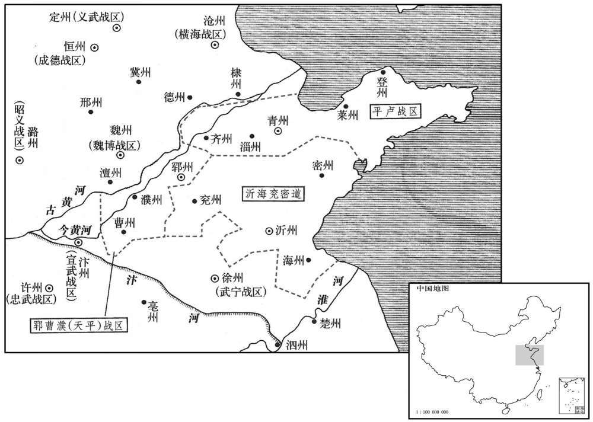
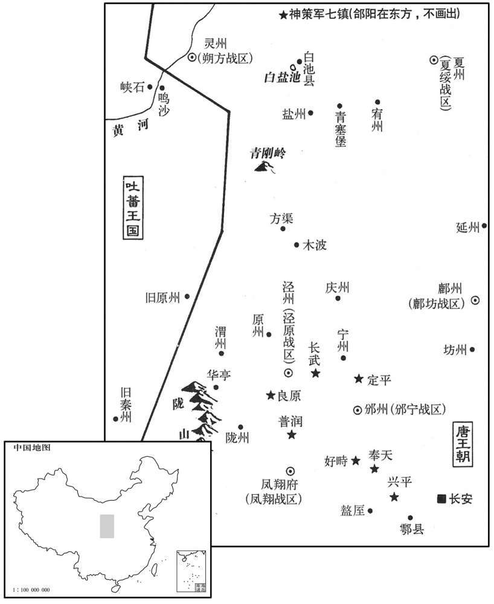
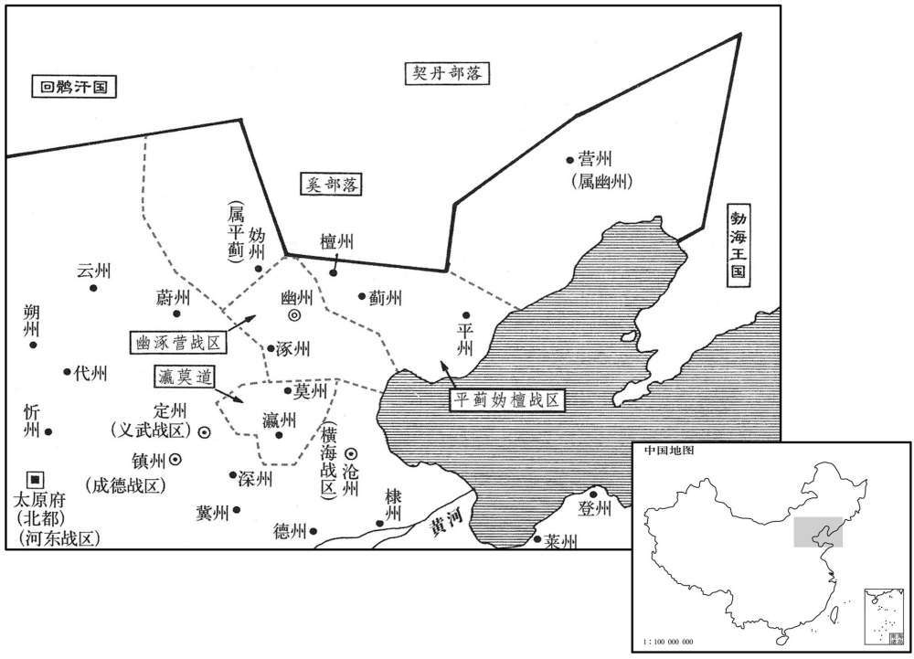

卷次与人物目录 / 卷241
资治通鉴 · 卷第二百四十一【唐纪五十七】
公元819年至公元821年 · 原文、白话与胡三省注
本页按胡注本编排保存全卷内容。白话采用本站所据译本，未可靠对应的内容另列说明；事件标题用于定位，并非原书文字。
本卷共126段原文，123段有译文对应，3段缺译或待核对。
卷第二百四十一【唐纪五十七】起屠维大渊献（己亥）二月，尽重光赤奋若（辛丑）六月，凡二年有奇。
卷首原文与注释
宪宗昭文章武大圣至神孝皇帝下
公元819年 · 唐宪宗昭文章武大圣至神孝皇帝元和十四年
元和十四年〔（己亥、八一九）〕
上传原文的注释括号有异常，字符原样保留；无法可靠划分的段落默认全文显示。
本年记事分属相邻卷，按原书顺序分别保留：第240卷 · 第241卷。
本年事件索引（现代整理）
- 李听攻取海州数县，李愬击败平卢兵并取丞县
- 李师道役使郓州百姓修城备战
- 刘悟在阳谷遭田弘正击败后，与李师道决裂
- 张暹识破李师道密令斩杀刘悟的计谋并告知刘悟
- 刘悟痛陈李师道欲杀己，率军夜袭郓州
- 刘悟率军趁夜攻入郓州
- 刘悟擒获李师道父子并释放贾直言
- 刘悟事先与田弘正约定，攻取郓州后举烽报信
- 田弘正验明李师道首级，夏侯澄抱首痛哭
- 田弘正奏报平定淄青
- 宪宗将李师道旧辖十二州划分为三道
- 刘悟以讨伐诏书许诺的全境封赏自居
- 宪宗任刘悟为义成节度使，刘悟奉诏离开郓州
- 刘悟部下斩杀李文会
- 宪宗任张暹为戎州刺史
- 宪宗加田弘正检校司徒、同平章事
- 田弘正入郓后废除苛禁，让百姓恢复游乐
- 田弘正查获李师道贿赂潼关、蒲津守吏的证据
- 裴度编述讨平蔡州、郓州以来宪宗的谋略，宪宗不许交史馆
- 宪宗任马总、薛平、王遂分镇新平定的淄青诸州
- 乌重胤建议将支郡兵马交由刺史统领
- 同平章事程异薨
- 裴度遭皇甫镈党羽排挤，改任河东节度使
- 武儒衡上疏批评皇甫镈聚敛取媚
- 李翱上疏请宪宗革新政事以巩固太平
- 田弘正送刺杀武元衡的王士元等入京受审并处死
- 宣武节度使韩弘入朝献礼
- 群臣为宪宗上尊号并大赦
- 王遂严酷治军，激起将士愤怨
- 王弁等士卒趁王遂宴饮谋划兵变
- 王弁等发动兵变杀王遂与监军副使张敦实
- 韩弘再献丝绢，左右神策军中尉亦进奉
- 宪宗任令狐楚为同平章事
- 宪宗任曹华为沂海兖密观察使
- 韩弘屡请留京，宪宗令其以守司徒兼中书令
- 田弘正入朝，宪宗厚待
- 郗士美薨，李渤奏请免除逃户邻里摊税
- 吐蕃寇庆州并驻营方渠
- 朝廷赦免王弁并召其入朝，后将其腰斩
- 曹华诱杀沂州将士一千二百人以报王遂之仇
- 司马光批评朝廷以诏书诱捕王弁
- 司马光批评曹华设诈屠杀将士、破坏君臣信任
- 司马光感叹宪宗削平藩镇后未能终成治世
- 宪宗任田弘正兼侍中，田弘正数请留镇魏博
- 宪宗询问玄宗先治后乱的原因，崔群以用人得失作答
- 容管奏报杨清攻陷安南都护府并杀李象古
- 孔戣反对讨伐屡叛的黄少卿，宪宗不听并致士卒染瘴
- 宪宗赦免杨清并任桂仲武为安南都护
- 吐蕃围攻盐州，史奉敬率军击退吐蕃
- 柳泌在台州驱使吏民采药，无所得后逃入山中
- 裴潾上疏反对方士献药并遭贬
- 皇甫镈诬告崔群，崔群出任湖南观察使
- 令狐楚举荐狄兼谟，宪宗因此轻视令狐楚
二月，李听袭海州，克东海、朐山、怀仁等县。〔海州，治朐山，本汉朐县，后人加「山」字。东海，汉赣榆县地，后齐置东海县，属东海郡；隋废郡及县，入广饶县，隋仁寿元年改广饶日东海，避太子讳也；唐属海州。九域志：在州东一十里。怀仁县，梁置南、北二青州，东魏废州，置义塘郡及怀仁县，隋废郡，以县属海州。九域志：在州北八十里。宋白曰：海州怀仁县，本汉赣余县地。按汉赣余，今县东北三十里赣余古城是也，梁于此置黄郭戍，后魏置义塘郡，理黄郭城，领义唐、归义、怀仁三县，高齐移义唐郡及怀仁县并理今密州莒县界，隋开皇废郡，移怀仁县理此，今县理是也。〕李愬败平卢兵于沂州，拔丞县。〔丞，汉县，后魏置兰陵郡，隋废郡为兰陵县，武德四年改曰丞县，后属沂州。九域志：在州西南一百八十里。宋白曰：丞，汉旧县，春秋时鄫国也。晋置兰陵郡，理理丞城。按前此丞县理在今县西一里，汉没县故城是也。隋开皇十六年置鄫州及丞县，寻废州及县，仍移兰陵县置于鄫州故城，中唐又改兰陵为丞县。县西北有丞水。败，补迈翻。丞，时证翻。〕
二月，李听出兵袭击海州，攻克东海、朐山、怀仁等县。李率军在沂州击败平卢兵，攻克丞县。
李师道闻官军侵逼，发民治郓州城堑，修守备，〔治，直之翻。堑，七艳翻。〕役及妇人，民益惧且怨。
淄青节度使李师道听说唐官军日益逼近，于是征发民夫修治郓州城池，加强防守。又征发妇女，百姓更加恐惧怨恨。
都知兵马使刘悟，正臣之孙也，〔刘正臣二百一十七卷肃宗至德元载。〕师道使之将兵万余人屯阳榖以拒官军。悟务为宽惠，使士卒人人自便，军中号日刘父。及田弘正渡河，悟军无备，战又数败。〔数，所角翻。〕或谓师道曰：「刘悟不修军法，专收众心，专收众心，恐有他志，宜早图之。」师道召悟计事，欲杀之。或谏曰：「今官军四合，悟无逆状，用一人言杀之，诸将谁肯为用！是自脱其爪牙也。」师道留悟旬日，复遣之，厚赠金帛以安其意。悟知之，还营，阴为之备。师道以悟将兵在外，署悟子从谏门下别奏。〔门下别奏者，使厕员牙门下，俟别奏补官也。唐六典：凡诸军镇大使，三品已上，傔二十五人，别奏十人；副使，傔二十人，别奏八人。总管，三品已上，傔十八人，别奏六人；子总管，四品已上，傔十一人，别奏三人。若讨击、防御、游弈使副，傔准品各减三人，别奏各减二人。总管及子总管，傔准品各减二人，别奏各减一人。若镇守已下无副使或隶属大军镇者，使已下傔，奏并四分减一，所补傔、奏皆令自召以充。〕从谏与师道诸奴日游戏，颇得其阴谋，密疏以白父。
都知兵马使刘悟，即唐肃宗朝平卢节度使刘正臣的孙子。李师道命悟率兵万余人屯驻阳，以拒抗官军。刘悟治军宽厚，使士卒人人自便，不加约束，军中称誉他为“刘父”。及至魏博节度使田弘正率军南渡黄河，进攻淄青，刘悟军无准备，出战屡败。有人对李师道说：“刘悟不修军法，专意收买人心，恐有异志，应早有防备。”于是，李师道托言商议军事，召刘悟来郓州，想借机把刘悟杀死。有人劝李师道说：“今官军四面围攻淄青，刘悟尚未有谋反的迹象，听信一人之言就把他杀死，诸将中谁肯为您效力！这是自除爪牙。”李师道认为言之有理，留刘悟在郓州十日后，命他仍回阳谷，并赠送大批金帛加以安抚。刘悟知李师道已怀疑自己，返回军营后，秘密做防守准备。李师道因刘悟率兵在外，任命他的儿子刘从谏为门下别奏，留在郓州。刘从谏每天与李师道家奴游玩，获悉李师道阴谋，写密信转告父亲。

又有谓师道者曰：「刘悟终为患，不如早除之。」丙辰，师道潜遣二使赍帖授行营兵马副使张暹，令斩悟首献之，勒暹权领行营。时悟方据高丘张幕置酒，去营二三里。二使至营，密以帖授暹。暹素与悟善，阳与使者谋曰：「悟自使府还，〔还，音旋，又如字。〕颇为备，不可忽忽，暹请先往白之，云『司空遣使存问将士，兼有赐物，请都头速归，〔军中称都将为都头〕同受传语。』〔传语，谓师道遣使者所传言语也。〕如此，则彼不疑，乃可图也。」使者然之。暹怀帖走诣悟，屏人示之。〔屏，必郢翻，又卑正翻。〕悟潜遣人先执二使，杀之。
部下又有人对李师道说：“刘悟终必谋反，不如早日除掉他。”丙辰（初八），李师道密派亲信二人带手令前往阳谷，命行营兵马副使张暹杀掉刘悟，割下他的头送郓州查验，然后由张暹代领行营兵马。这时，刘悟正在一块高地上树立帐幕，设置酒宴，离开军营二三里。二使到阳谷军营后，密将李师道手令授予张暹。张暹向来和刘悟相好，便假装与使者商议说：“刘悟从郓州节度使府回来后，已有防备，此事不可匆忙。请先让我去报告刘悟，假称‘李师道派人来尉问将士，带来大批赏赐物品，请都头速归军营，一同接受指令’。这样，刘悟必然不疑，然后可乘机下手。”二使同意张暹的意见。于是，张暹把李师道手令揣在怀中，到刘悟饮宴处，命随从退下，交刘悟观看。刘悟得知李师道阴谋后，秘密派人擒杀二使。
时已向暮，悟按辔徐行还营，坐帐下，严正自卫。召诸将，厉色谓之曰：「悟与公等不顾死亡以抗官军，诚无负于司空。今司空信谗言，来取悟首。悟死，诸公其次矣。且天子所欲诛者独司空一人，今军势日蹙，吾曹何为随之族灭！欲与诸公卷旗束甲，〔卷，与卷同。〕还入郓州，奉行天子之命，〔言奉行诏旨，以诛李师道。〕岂徒免危亡，富贵可图也。诸公以为如何﹖」兵马使赵垂棘立于众首，良久，对曰：「事〔【章：十二行本「事」上有「如此」二字；乙十一行本同；孔本同；张校同。】〕果济否﹖」悟应声骂曰：「汝与司空合谋邪！」立斩之。徧问其次，有迟疑未言者，悉斩之，并斩军中素为众所恶者，〔恶，乌路翻。〕凡三十余，尸于帐前。余皆股栗，曰：「惟都头命，愿尽死！」＊
这时，天已傍晚，刘悟乘马缓行回营，坐于帐中，重兵把守，严加防备。随后，召集众位将领，声色严厉地说：“我和你们不顾死活抗击官军，确实对得起李师道。今李师道听信谗言，派人来杀我。如果我死，你们随后也会被杀。当朝天子发兵围攻淄青，声明只杀李师道一人。如今我军形势日渐窘迫，我等为什么要随他一同被灭族！现在，我和大家商议，打算卷旗束甲袭击郓州，奉行天子之命，杀李师道，不仅可免我等危亡，而且可图富贵。大家认为如何？”兵马使赵垂棘站在诸将前头，沉默很久，说：“不知此事能否成功？”刘悟应声骂道：“难道你要与李师道同谋吗？”即命斩首。接着，挨个询问，诸将凡迟疑不言者，一律斩首，并斩杀军中向来为众所憎恶者，共三十余人，尸首列于帐前。其余诸将都两腿发抖，说：“愿听都头命令，尽死效力！”
乃令士卒曰：「入郓，人赏钱百缗，惟不得近军帑。〔近，其靳翻。帑，他朗翻。〕其使宅及逆党家财，任自掠取；〔使宅，谓节度使所居也。〕有仇者报之。」使士皆饱食执兵，夜半，听鼓，三声绝，即行，人衔枚，马缚口，遇行人，执留之，〔恐行人遇兵，走还城报师道，令执留之。〕人无知者。距城数里，天未明，悟驻军，使听城上柝声绝，〔天明，则柝声绝。〕使十人前行，宣言「刘都头奉帖追入城。」〔主帅文书下诸将谓之帖。〕门者请俟写简白使，〔古者联竹为简策以写书为简。白使，谓白节度使。使，疏吏翻。〕十人拔刃拟之，皆窜匿；悟引大军继至，城中噪哗动地。此至，〔比，必利翻，及也。〕子城已洞开，惟牙城拒守，〔凡大城谓之罗城，小城谓之子城。又有第三重城以卫节度使居宅，谓之牙城。谓之牙城。〕寻纵火斧其门而入。牙中兵不过数百，始犹有发弓矢者，俄知力不支，皆投于地。
于是，刘悟下达出兵命令，对士卒说：“攻入郓州，每人赏钱一百缗。除军库外，凡节度使住宅及其他叛党家财，允许你们任意掠取，有仇者许可报仇。”接着，命士卒饱食一顿，每人携带兵器，半夜时分，听鼓声三响后出发。将士口衔枚，军马缚口，防止喧哗；凡遇行人，都执留军中，以防走漏消息。军行所至，人都不知。距郓州数里时，天还未亮，刘悟命将士就地待命，听城上巡逻的木邦声停止后，派十人先行抵城下，言称“刘都头奉节度使手令入城”。守门人请大家稍候，正想写书简秉告李师道时，十人突然拔刀欲斩，守门人一哄而逃。刘悟率大军随后赶到。城中听说有兵马袭击，喧哗动地，一片混乱。等到刘悟入城时，内城已被攻开。只有李师道所住的牙城还在抗拒坚守。刘悟下令纵火焚烧，用大斧辟开城门，将士一齐涌入。城中亲兵不过数百人，开始还有人发箭抵抗，后知寡不敌众，都投弓箭于地而降。
悟勒兵升听事，使辅索师道。师道与二子伏厕床下，索得之，悟命置牙门外隙地，使人谓曰：“悟奉密诏送司空归阙，然司空亦何颜复见天子！”师道犹有幸生之意，其子弘方仰曰：“事已至此，速死为幸！”寻皆斩之。自卯至午，悟乃命两都虞候巡坊市，禁掠者，即时皆定。大集兵民于球场，亲乘马巡绕，慰安之。斩赞师道逆谋者二十余家，文武将吏且惧且喜。悟见李公度，执手欷；出贾直言于狱，置之幕府。
刘悟率将士入淄青节度使府，命搜捕李师道。李师道和他的两个儿子藏在侧面的床下，被士卒搜出。刘悟命把李师道父子押到节度使府门外的空地上，派人对他说：“刘都头奉天子密诏，打算将您送到京城面见皇上，但是您还有什么脸面再见皇上呢！”这时，李师道仍想能幸免一死，他的儿子李弘方仰面叹道：“事已至此，盼求快死为幸！”随后，父子三人都被斩首。从清晨到中午，刘悟命令左、右都虞候巡行街坊和集市，禁止将士焚掠，到了下午，城内很快安定。于是，刘悟命将士和百姓到鞠场集中，亲自乘马绕场一周，安抚慰劳众人。然后，下令处斩与李师道一起叛乱者，共二十余家，文武将吏目睹叛乱者被杀，又怕又喜。刘悟与李公度相见，二人握手哭泣。又命把贾直言从狱中放出，置于幕府参议军事。
悟勒兵升听事，使捕索师道。索，山客翻。师道与二子伏厕床下，索得之，〔索，山客翻。悟命置牙门外隙地，使人谓曰：「悟奉密诏送司空归阙，然司空亦何颜复见天子！」〔复，扶又翻。〕师道犹有幸生之意，其子弘方仰曰：「事已至此，速死为幸！」寻皆斩之。〔代宗永泰元年，李正己得淄青，四世，五廾四年而灭。〕自卯至午，悟乃命两都虞候巡坊市，禁掠者，实时皆定。大集兵民于球场，亲乘马巡绕，慰安之。斩赞师道逆谋者二十余家，文武将吏且惧且喜。〔【章：十二行本「喜」下有「皆入贺」三字；乙十一行本同；孔本同；张校同。】〕悟见李公度，执手歔欷；出贾直言于狱，〔直言被囚见上卷上年。〕置之幕府。
本段缺少可靠对应白话，原文完整保留；未使用生成译文。
悟之自阳谷还兵趋郓也，〔趋，七喻翻。〕潜使人以其谋告田弘正：「事成，当举烽相白；万一城中有备不能入，愿公引兵为助。功成之日，皆归于公，悟何敢有之。」且使弘正进据己营。弘正见烽，知得城，遣使往贺。悟函师道父子三首遣使送弘正营，弘正大喜，露布以闻。淄、青等十二州皆平。
在刘悟率军从阳出发袭击郓州前，曾暗中派人把行动计划转告魏博节度使田弘正，约定：“如果事成，就举烽火相告；万一城中有防备不能攻入，请率兵相助。事成之后，全部归功于您，我不敢据功为己有。”同时，请求田弘正率军进据阳谷营地。这时，田弘正看到烽火，知道郓州已被刘悟攻克，便派使者前往祝贺。刘悟把李师道父子三人的首级放入盒中，派人送到田弘正军营，弘正大喜，写文告上报朝廷。至此，淄、青等十二州全部平定。
弘正初得师道首，疑其非真，召夏侯澄使识之。澄熟视其面，长号陨绍者久之，乃抱其首，舐其目中尘垢，复恸哭。弘正为之改容，义而不责。〔识，如字，辨识也。号，户刀翻。舐，直氏翻。复，扶又翻。为，于伪翻。夏侯澄禽见上卷上年。〕
起初，田弘正得李师道首级，怀疑是否真实，于是，命夏侯澄前来辨识。夏侯澄仔细看后，大声痛哭了很久，悲痛欲绝，接着，将李师道首级捧起，用舌尖舐净眼睛中的灰尘，然后又大声哭泣。田弘正见此情景，不免受到感染，认为夏侯澄忠心重义，也不责备。
壬戌，田弘正捷奏至。乙丑，命户部侍郎杨于陵为淄青宣抚使。已巳，李师道首函至。自广德以来，垂六十年，藩镇跋扈河南、北三十余州，自除官吏，不供贡赋，至是尽遵朝廷约束。〔呜呼！兼并易也，坚凝之难！读史至此，盍亦知其所以得，鉴其所以失，则知资治通鉴一书不苟作矣。〕
壬戌（十四日），田弘正奏捷文告送到京城。乙丑（十七日），唐宪任命户部侍郎杨於陵为淄青宣抚使。已巳（二十一日），装着李师道首级的盒子送至京城。自从唐代宗广德元年（763年）以来，蕃镇在河南、河北三十余州割据跋扈，自命官吏，不向朝廷上供赋税，将近六十余年，至此全部重新遵守朝廷法令。
上命杨于陵分李师地道，于陵按图籍，视土地远迩，计士马众寡，校仓库虚实，分为三道，使之适均：〔于，音乌。〕以郓、曹、濮为一道，〔郓，音运。濮，音卜。〕淄、青、齐、登、莱为一道，兖、海、沂、密为一道；上从之。
唐宪宗命杨於陵分割李师道淄青十二州。於陵阅视淄青地图和户籍后，根据各州土地的远近，士卒和军马的多少，以及仓库虚实，拟分为三道，使各方面情况比较平均：以郓州、曹州、濮州为一道；淄州、青州、齐州、登州、莱州为一道；兖州、海州、沂州、密州为一道。宪宗准奏。
刘悟以初讨李师道诏云：「部将有能杀师道以众降者，师道官爵悉以与之。」意谓尽得十二州之地，遂补署文武将佐，更州县长吏；〔更，工衡翻。〕谓其下曰：「军府之政，一切循旧。自今但与诸公抱子弄孙，夫复何忧！」〔复，扶又翻；下复须同。〕
刘悟根据当初发布的讨伐李师道诏书所说“如果部将有人能杀李师道，率军投降朝廷，即以师道官爵授予此人”，认为自己应该为淄青节度使，尽得淄青十二州。于是，开始擅自任命文武将吏，更换州县官吏。他对部下说：“军府政事，一切遵循旧制。今后，我和大家抱子弄孙，长享富贵，还有什么可以忧愁的呢！”
上欲移悟他镇，恐悟不受代，复须用兵，密诏田弘正察之。弘正日遣使者诣悟，托言修好，实观其所为。悟多力，好手搏，〔好，呼到翻。〕得郓州三日，则教军中壮士手搏，与魏博使者庭观之，自摇肩攘臂，离坐以助其势。〔离，力智翻。坐，徂卧翻。〕弘正闻之，笑曰：「是闻除改，〔除改，谓除书改授他镇。〕登即行矣，〔言登时即行也。〕何能为哉！」庚午，以悟为义成节度使。悟闻制下，手足失坠；〔言惊遽失守，不知所为。〕明日，遂行。弘正已将数道，比至城西二里，与悟相见于客亭，〔客亭，即驿亭，送迎使客之所。〕即受旌节，驰诣滑州，辟李公度、李存、郭昈、贾直言以自随。
唐宪宗拟把刘悟调离淄青，但恐怕刘悟拒不从命，而不得不再次用兵。于是，下密诏给田弘正，命他观察刘悟的言行，看他是否可能拒诏。田弘正接到宪宗的密诏后，每天派人前往郓州，借口与刘悟交好，实际上是观察他的言行。刘悟力大无比，喜欢摔跤，攻克郓州三天后，就教军中壮士练习摔跤，他和魏博的使者在庭院中观看。刘悟一边观看，一边挽袖捋臂，有时还离座呐喊助威。田弘正听说后，哑然失笑，说：“像他这个样子，如果调动的诏书下达，肯定会立即成行，不可能有什么作为。”庚午（二十二日），唐宪宗诏命刘悟为义成节度使，刘悟接诏后，惊慌失措。第二天，就上路赴任了。这天，田弘正率众将为刘悟送行，到郓州城西二里时，在驿站与刘悟相见，刘悟接受义成节度使旌节，征召李公度、李存、郭、贾直言为幕僚，赶赴滑州上任。
悟素与李文会善，既得郓州，使召之，未至。〔李文会出登州见上卷上年。〕闻将移镇，昈、存谋曰：「文会佞人，败乱淄青一道，〔败，补迈翻。〕灭李司空之族，万人所共雠也！不乘此际诛之，田相公至，务施宽大，将何以雪三齐之愤怨乎！」〔自项羽分齐为三，以王田市、田都、田安，遂有三齐之名。后人因而言之。〕乃诈为悟帖，遣使即文会所至，取其首以来。使者遇文会于丰齐驿，斩之。〔据梁敬翔编遗录，丰齐驿当在齐州东南三十里。宋白曰：齐州禹城县有汉祝阿故城，在丰齐驿东北二里。〕比还，〔比，必利翻。及也。还，音旋，又如字。〕悟及昈、存已去，无所复命矣。文会二子，一亡去，一死于狱，家赀悉人所掠，田宅没官。
刘悟向来和李文会相好，当初攻克郓州后，曾派人到登州去请李文会。李文会尚未到郓州，郭、李存听说刘悟即将调往他地，二人商议说：“文会是奸佞小人，由于他的缘故，致使淄青败乱，李师道遭灭族之灾，众人无不以他为仇人！如果不乘此良机把他杀掉，等田弘正来后，肯定以宽大为怀，那时，将怎样来报大家的这个仇恨呢！于是，二人伪作刘悟手令，派人出使登州，命杀李文会，割下他的头回来报告。使者在齐州东南方向的丰齐驿碰到李文会，将他杀死后，回到郓州。这时，刘悟已经和郭、李存等人离开郓州前往滑州，使者无法再报告了。李文会有两个儿子，一个逃亡，一个死在狱中，他的家产全都被人掠去，田地和庄宅被朝廷没收。
诏以淄青行营副使张暹为戎州刺史。〔刘悟奏言其功也。〕
唐宪宗下诏，命淄青行营副使张暹为戎州刺史。
癸酉，加田弘正检校司徒、同平章事。
癸酉（二十五日），唐宪宗加封田弘正为检校司徒、同平章事。
先是，李师道将败数月，〔先，悉荐翻。〕闻风动鸟飞，皆疑有变，禁郓人亲宴聚及道路偶语，犯者有刑。弘正既入郓，悉除苛禁，人游乐，寒食七昼夜不禁行人。〔弘正特为此示郓人以宽大耳。按寒食之说不同，初学记曰：周礼司烜氏，仲春以木铎徇火禁于国中。注云：为季春将出火也。今寒食准节气是仲春之末。清明是三月之初。然则禁火并周制也。洪容斋曰：先贤传曰：太原旧俗以介子推焚骸，一月寒食。邺中记曰：并州俗，冬至后一百五日为子推断火，冷食三日。魏武以太原、上党、西河皆冱寒之地，令人不得寒食。此注已见前。〕或谏曰：「郓人久为寇敌，今虽平，人心未安，不可不备。」弘正曰：「今为暴者既除，宜施以宽惠，若复为严察，是以桀易桀也，庸何愈焉！」〔愈，贤也，胜也。复，扶又翻。〕
当初，李师道在败亡前的几个月，紧张多疑，听到风吹鸟飞，就怀疑有什么变故，于是下令禁止郓州人在一起饮宴相聚，以及行人悄声私语，如有违犯，就严刑惩处。田弘正来到郓州后，下令除去这些严苛的禁令，放纵百姓们游乐，寒食节七昼夜不禁行人往来。有人劝田弘正说：“郓州人随同李师道数年，与朝廷为敌，现虽已平定，人心尚未安定，不可不防。”田弘正说：“如今淄青暴乱为首者已经诛除，应当施行惠政，如果仍以严刑为政，那就好比是以夏桀来代替夏桀，又有什么改善呢？”
先是，贼数遣人入关，截陵戟，焚仓场，流矢飞书，以震骇京师，沮挠官军。〔事见二百三十九卷十年。数，所角翻。沮，在吕翻。挠，奴巧翻。〕有司督察甚严，潼关吏至发人囊箧以索之，〔索，山客翻。〕然终不能绝。及田弘正入郓，阅李师道簿书，有赏杀武元衡人王士元等及赏潼关、蒲津吏卒案，乃知向者皆吏卒受赂于贼，容其奸也。〔案，文案也，亦请之案牍。史言关津不足以禁奸，乃所以容奸。〕
起初，在元和十年时，朝廷数万官军围攻淮西吴元济，叛贼多次派人潜入潼关，截断皇陵门戟，焚烧官仓粮储，甚至用箭把恐吓信射入京城，制造混乱，吓唬朝廷和百姓，以便阻挠官军的进攻。朝廷严令有关部门搜查，潼关官吏甚至把来往行人的背包和箱子都打开查看，但始终未能禁绝这类不测事件的发生。等到田弘正进入郓州后，翻阅李师道的文书，发现其中有赏赐杀宰相武元衡的刺客王士元等人的记载，以及赏赐潼关、蒲津官吏、士卒的案卷，这才知道以往种种不测事件，都是由于官吏、士卒受敌贿赂，容纳叛贼作乱。
裴度纂述察、郓用兵以来上之忧勤机略，因侍宴献之，请内印出付史官。〔请自禁中用印而出付史官。〕上曰：「如此，似出朕志，非所欲也。」弗许。〔史言宪宗此事得为君之体。〕
裴度把朝廷对淮西、淄青用兵以来，唐宪宗勤勉为政、日理万机的情形编纂成册，在陪伴宪宗饮宴时，乘机献上，奏请宪宗盖印，然后交付史官。宪宗说：“如果这样做，就会使史官产生错觉，以为是我指派你编纂的，其实，这并非我的本意。”于是没有准许。
三月，戊子，以华州刺史马总为郓、曹、濮等州节度使。己丑，以义成节度使薛平为平卢节度、淄．青．齐．登．莱等州观察使。〔自是之后，淄青专平卢之号，而郓寻赐号天平军矣。〕以淄青四面行营供军使王遂为沂、海、兖、密等州观察使。〔为王遂以严酷召乱张本。〕
三月，戊子（初十），唐宪宗命华州刺史马总为郓、曹、濮等州节度使。己丑（十一日），命义成节度使薛平为平卢节度使和淄、青、齐、登、莱等州观察使。命淄青四面行营供军使王遂为沂、海、兖、密等州观察使。

横海节度使乌重胤奏：「河朔藩镇所以能旅拒朝命六十余年者，由诸州县各置镇将领事，收刺史、县令之权，自作威福。向使刺史反得行其职，则虽有奸雄如安、史，必不能以一州独反也。臣所领德、棣、景三州，已举牒反还刺史职事，应在州兵并令刺史领之。」夏，四月，丙寅，诏诸道节度、都团练、都防御、经略等使所统支郡兵马，并令刺史领之。自至德以来，节度使权重，所统诸州反置镇兵，以大将主之，暴横为患，〔横，户孟翻。〕故重胤论之。其后河北诸镇，惟横海最为顺命，由重胤处之得宜故也。〔史言反侧之地，择帅不可不详。处，昌吕翻〕。
横海节度使乌重胤上奏：“河朔藩镇所以能够长期抗拒朝廷诏令，割据六十余年，原因是他们在各州设置镇将主持军政，夺刺史和县令的权力，自作威福。如果能让刺史行使自己的职权，那么，就是出现像安禄山、史思明这样的奸雄，也必然不可能以一州的兵力叛乱。现在，我所管辖的德、棣、景三州，已下令各州镇将把军权归还刺史，各州的州兵都由刺史统辖。”夏季，四月，丙寅（十九日），唐宪宗下诏，命各道节度使、都团练使、都防御使、经略使等所统辖的支郡兵马，一律归各州刺史统辖。自从至德元年以来，节度使权势日重，他们在各自管辖的州郡设置镇兵，派大将主持军务，专横跋扈，所以，乌重胤上奏论及此事。从此以后，河北藩镇中，只有横海最为顺从朝廷，都是由于乌重胤处置适宜的缘故。
辛未，工部侍郎、同平章事程异薨。
辛未（二十四日），工部侍郎、同平章事程异去世。
裴度在相位，知无不言，皇甫镈之党阴挤之。〔挤，子细翻，又子西翻。考异曰：旧传曰：「镈与宰相李逢吉、令孤楚合势挤度，故出镇。」按逢吉时在东川，楚在昭义，皆不为相。今不取。按后「昭义」当作「河阳」。〕丙子，诏度以门下侍郎、同平章事，充河东节度使。
宰相裴度知无不言，皇甫的党羽在暗地里不断排挤他。丙子（二十九日），唐宪宗下诏，命裴度带门下侍郎、同平章事的荣誉官衔，充任河东节度使。
皇甫镈专以掊克取媚，〔掊，蒲侯翻。〕人无敢言者，独谏议大夫武儒衡上疏言之。镈自诉于上，上曰：「卿以儒衡上疏，将报怨邪！」镈乃不敢言。儒衡，元衡之从父弟也。〔从，才用翻。〕
皇甫专以聚敛取媚宪宗，朝臣都不敢言，只有谏议大夫武儒衡上奏，指斥皇甫罪行。皇甫向宪宗上诉，表示自己清白无辜。宪宗说：“你是由于武儒衡上奏，难道想要报复他吗？”皇甫这才不敢再说了。武儒衡是前宰相武元衡的叔伯兄弟。
史馆修撰李翱上言，贞观三年置史馆于门下省，有修撰四人，掌修国史。以为：「定祸乱者，武功也；兴太平者，文德也。今陛下即以武功定海内，若遂革弊事，复高祖、太宗旧制；用忠正而不疑，屏邪佞而不迩；〔屏，必郢翻，又卑正翻。〕改税法，不督钱而纳布帛；〔自建中初，杨炎定两税法，不令民输其土之所产而督钱。〕绝进献，宽百姓租赋；厚边兵，以制戎狄侵盗；数访问待制官，以通塞蔽；〔数，所角翻。塞，悉则翻。〕此六者，政之根本，太平之所以兴也。陛下既已能行其难，若何不为其易乎！以陛下天资上圣，如不惑近习容悦之辞，任骨鲠正直之士，与之兴大化，可不劳而成也。若不以此为事，臣恐大功之后，逸欲易生。〔易，以豉翻。〕进言者必曰：『天下既平矣，陛下可以高枕自安逸，』〔忱，职任翻。〕如是，则太平未可期矣！」
史馆修撰李翱上奏，认为：“平定祸乱依靠武力，开创太平大业则依靠文治和贤德。现在，皇上既然已经用武力平定天下，不如接着革除弊政，恢复高祖、太宗创立的传统制度，任用忠心正直的人士而不随便怀疑，摒斥奸邪佞幸的小人而不再亲近他们；改革赋税制度，将以往收钱币改为交纳实物；禁绝地方官吏向朝廷奉献钱物，减免百姓的租税；加强边防，抵抗边境戎狄的侵犯；经常访求待制官员，倾听他们的意见，以使下情上达。以上六条，是朝廷大政的根本之道，也是达到太平盛世的主要途径。现在，皇上既已经把那些常人难以做到的事都完成了，为什么不接着实行这些容易做到的事呢？按照皇上的天资和圣明，如果不受身边小人的巧言诱惑，信用耿直忠正的臣僚，那么，天下太平大治，可不劳皇上躬亲辛劳而自然形成。但如果皇上不注意这些方面，我担心在以武功平定天下之后，贪图安逸的欲望容易滋生，臣下左右阿谀迎奉，这时，就有人向皇上进言，他们必定会这样说：‘天下已经太平了，皇上可以高枕无忧，自图安逸。’如果皇上按照他们说的那样去贪图享乐的话，太平盛世也就遥远无期了！”
秋，七月，丁丑朔，田弘正送杀武元衡贼王士元等十六人，诏使〔【章：十二行本「使」作「仗」；乙十一行本同；孔本同；熊校同。】〕内京兆府、御史台徧鞫之；皆款服。〔款，诚也，言吐诚而伏罪也。〕京兆尹崔元略以元衡物色询之，则多异同。元略问其故，对曰：「恒、郓同谋遣客刺元衡，〔恒，户登翻。刺，七亦翻。〕而士元等后期，闻恒人事已成，遂窃以为己功，还报受赏耳。今自度为罪均，〔度，徒洛翻。〕终不免死，故承之。」上亦不欲复辨正，悉杀之。〔复，扶又翻。〕
秋季，七月，丁丑朔（初一），田弘正把暗杀武元衡的刺客王士元等十六人押送京城。唐宪宗下诏，命将王士元等人交付京兆府、御史台逐个详加审问，王士元等人都招供认罪。但当京兆尹崔元略问武元衡遇难时穿的衣服是什么颜色时，王士元等人就说法不一了，崔元略追问是何缘故？王士元等人答称：“成德王承宗和淄青李师道同谋策划派遣刺客暗杀武元衡，我们受李师道的指派赶赴京城，不料来晚，误了约定的日期。听说成德人已经把武元德杀害，于是，我们就把功劳据为己有，为的是回去报功领赏。现在，我们自认为罪责和暗杀者相等，最终难免于一死，所以，也就招供认罪了。”唐宪宗也不愿再辨别王士元等人是否凶手，下令把他们全部斩首。
戊寅，宣武节度使韩弘始入朝，〔蔡、郓既平，韩弘始入朝。〕上待之甚厚。弘献马三千，绢五千，〔【张：「五千」作「五十万」。】〕杂绘三万，金银器千，〔缯，慈陵翻。〕而汴之库貛尚有钱百余万缗，绢百余万匹，马七千匹，粮三百万斛。〔史言韩弘善完聚。〕
戊寅（初二），宣武节度使韩弘首次来京朝拜，唐宪宗以隆重的礼节接待韩弘。韩弘向朝廷奉献战马三千匹，丝绢五千匹，杂色丝织品三万匹，金银器皿一千件。除此之外，宣武库房还有钱百余缗，丝绢百余万匹，战马七千匹，粮食三百万斛。
己丑，群臣上尊号曰元和圣文神武法天应道皇帝；赦天下。
己导（十三日），朝廷百官唐宪宗上尊号，称为元和圣文神武法天应道皇帝。然后，宪宗下诏大赦天下。
兖、海、沂、密观察使王遂，本钱谷吏，性狷急，无远识。〔狷，古掾翻。〕时军府草创，〔是年三月，方分四州置观察。〕人情未安，遂专以严酷为治，〔治，直吏翻。〕所用杖绝大于常行者；〔唐制：凡杖皆长三尺五寸，削去节目。讯杖，大头径三分三厘，小头二分二厘。常行杖，大头二分七厘，小头一分七厘。笞杖，大头二分小头一分有半。〕每詈将迕，軏曰「反虏」；又盛夏役士卒营府舍，督责峻急；将卒愤怨。
兖、海、沂、密观察使王遂出身于掌管钱谷的官吏，性情急躁，气量狭小，缺乏远见卓识。这时，观察使府刚刚创建，人心尚未安定，王遂却专门以严刑酷法进行治理，他所用的刑杖比一般常用的大得多。每次责骂将士时，动不动就侮辱他们为“反虏”。他还在盛夏的季节里，命令干兵冒着炎热酷暑为自己建造观察使府的房舍，并且严加监督催促。将士无不愤怒怨恨。
辛卯，毅卒王弁与其徒四人浴于泝水，〔沂州治临沂县，以临沂水名之也。〕密谋作乱，曰：「今服役触罪亦死，奋命立事亦死，死于立事，不犹愈乎！明日，常侍与监军副使有宴，军将皆在告，直兵多休息，〔常侍，谓王遂也。副使，谓观察副使也。在告，谓休假在私室也。直兵，直卫之兵也。〕吾属乘此际出其不意取之，可以万全。四人皆以为然，约事成推弁为留后。
辛卯（十五日），参加建造房舍的士兵王弁和同伙四人在沂水中洗澡，五人密谋作乱，王弁说：“现在，我们服役犯罪不免一死，拼死奋力而建功立业也不过一死，如果死于建功立业，岂不比服役犯罪而死更胜一筹！明天，听说王常侍和监军、副使要举行宴会，而部将都在休假，卫兵也大多休息，如果我们趁此机会出其不意袭杀他们，可以说是万全之策。”四人都认为王弁的主意不错，约定事成后共推王弁为观察留后，代行王遂的职务。
壬辰，遂方宴饮，日过中，弁等五人突入，于直房前取弓刀，〔直房，直兵之所舍之室也。〕径前射副使张敦实，杀之。〔射，而亦翻。〕遂与监事狼狈起走，弁执遂，数之以盛暑兴役，用刑刻暴，〔数，所具翻。〕立斩之。传声勿惊监事，弁即自称留后，升厅号令，与监军抗礼，召集将吏参贺，众莫敢不从。监军具以状闻。
壬辰（十六日），王遂等人正在饮宴，中午刚过，王弁等五人突然冲入，直奔卫兵值班房中夺取弓箭和刀枪，然后，向前对准观察副使张敦实射去，张敦实当即被杀死。王遂和监军仓遑站起逃窜，被王弁擒获，他历数王遂上任以来在盛夏征发劳役，以及对士兵和百姓用刑残暴的罪行，然后，将王遂斩首。王弁传令不得惊吓和冒犯监军，随即自称留后，升堂发布号令，与监军在礼仪上平起平坐。他又召集诸将和下属官吏前来参拜祝贺，众人不敢不从。监军把以上情况写成表状，上报朝廷。
甲午，韩弘又献绢二十五万匹，絁三万匹，〔絁，式支翻。〕银器二百七十；左右军中尉各献钱万缗。自淮西用兵以来，度支、盐铁及四方争进奉，谓之「助军」；贼平又进奉，谓之「贺礼」；后又进奉，谓之「助赏」；上加尊号又进奉，亦谓之「贺礼」。〔史历元和进奉之弊。
甲午（十八日），韩弘又向朝廷奉献丝绢二十五万匹，粗丝绸三万匹，银器二百七十件。左、右神策军护军中尉各向朝廷奉献钱一万缗。自从元和九年朝廷对淮西用兵以来，度支使、盐铁使以及各地藩镇争相向朝廷进奉钱物，称为“助军”；平定淮西等地以后又进奉，称为“贺礼”；接着，又进奉，称为“助赏”；宪宗加尊号时又进奉，也称为“贺礼”。
丁酉，以河阳节度使令狐楚为中书侍郎、同平章事。楚与皇甫镈同年进士，故镈引以为相。〔裴度之视师也，令狐楚出翰林，今皇甫镈引而相之，亦所以杜度之再入。〕
丁酉（二十一日），唐宪宗任命河阳节度使令狐楚为中书侍郎、同平章事。令狐楚与皇甫是同一年考中的进士，所以，皇甫引荐令狐楚担任宰相。
朝廷闻沂州军乱，甲辰，以棣州刺史曹华为沂、海、兖、密观察使。
朝廷听说沂州发生军乱，甲辰（二十八日），任命棣州刺史曹华为沂、海、兖、密观察使。
韩弘累表请留京师，八月，己酉，以弘守司徒，兼中书令。癸丑，以吏部尚书张弘靖同平章事，充宣武节度使。弘靖，宰相子，〔弘靖，张延赏之子。延赏相德宗。〕少有令闻，〔少，诗照翻。闻，音问。〕立朝简默；河东、宣武阙帅，〔帅，所类翻。〕朝廷以其位望素重，使镇之。弘靖承王锷聚敛之余，韩弘严猛之后，〔王锷镇河东，韩弘镇宣武，弘靖皆承其后。敛，力赡翻；下同。〕两镇喜其廉谨宽大，故上下安之。〔张弘靖之简贵，施之并、汴可也，施之幽燕则败矣。〕
韩弘多次上奏朝廷，请求批准自己留居京城。八月，己酉（初三），唐宪宗任命韩弘代理司徒，兼中书令。癸丑（初七），任命吏部尚书张弘靖带同平章事的官衔，充任宣武节度使。张弘靖是唐德宗时的宰相张延赏的儿子，从小就美名在外，在朝做官清简练达、静默通识。河东、宣武两镇缺任节度使，朝廷认为他向来威望和地位崇重，相继任命他前往镇守。河东前节度使王锷贪财聚敛，宣武前节度使韩弘严刑苛政，张弘靖赴任后，两镇的将吏和百姓喜爱他为官廉洁谨厚、宽容大度，因此，军心和民心由此安定下来。
己未，田弘正入朝，上待之尤厚。
两版字句有差异，建议核对原文。
已未（十三日），田弘正来京朝拜，唐宪宗以最为隆重的礼节接待他。
戊辰，陈许节度使郗士美薨，以库部员外郎李渤为吊祭使。渤上言：「臣过渭南，闻长源乡旧四百户，今纔百余户，閺乡县旧三千户，今纔千户，〔閺，音旻。〕其它州县大率相似。迹其所以然，皆由以逃户税摊于比邻，〔摊，他干翻。比，音毗，又毗至翻。〕致驱迫俱逃，此皆聚敛之臣剥下媚上，〔敛，力赡翻。〕惟思竭泽，不虑无鱼。〔吕氏春秋曰：竭泽而渔，岂不得鱼，而明年无鱼。〕乞降诏书，绍摊逃之弊；尽逃户之产偿税，不足者乞免之。计不数年，人皆复于农矣。」执政见而恶之，〔执政，谓皇甫镈。恶，乌路翻。〕渤遂谢病，归东都。
戊辰（二十二日），陈许（忠武）节度使郗士美去世，唐宪宗任命库部员外李渤为吊祭使。李渤完成吊丧任务后，回到京城，上奏朝廷说：“我这次出使路过渭南，听说长源乡过去有四百户，现在仅存百余户，乡县过去有三千户，现在仅存一千户，其它州县户口耗减情况与此大体相似。户口耗减这样严重，究其原因，都是由于州县官吏把逃户所欠的税款摊派给他们的邻居，邻居不堪负担，以致被迫和逃户一样逃亡。这都是那些贪官污吏剥夺百姓而向他们的上司献媚，因此只想到竭泽而渔，不考虑以后还有没有鱼可捕捞的缘故。请求皇上颁下诏书，禁绝摊逃的弊政，同时建议把逃户的全部财产用来抵税，如果还不足以抵偿的话，就请求予以免除。这样，用不了几年，逃户就会逐渐回乡重新开始农业生产。”宰相皇甫看到李渤的奏章，憎恨他诋毁朝政，置之不理。于是李渤假托身体有病，辞官回到东都洛阳。
癸酉，吐蕃寇庆州，〔庆州，隋弘化郡，开皇十六年改为庆州，以庆美取其嘉名，汉归德、富平县地。旧地：京师西北五百七十二里。〕营于方渠。
癸酉（二十七日），吐蕃出兵侵犯庆州，在方渠扎寨安营。
朝廷议兴兵讨王弁，恐青、郓相扇继变，〔青、郓与兖、海、沂、密，本一镇也。故恐其相扇而动。〕乃除弁开州刺史，遣中使赐以告身。中使给之曰：「开州计已有人迎候道路，留后宜速发。」弁即日发沂州，边从尚百余人，〔从，才用翻。〕入徐州境，所在减之，其众亦稍散。遂加以杻械，〔杻，敕久翻。〕乘驴入关。九月，戊寅，腰斩东市。
朝廷商议发兵讨伐王弁，但又恐怕青州和郓州相互煽动，继而也发生兵变。于是，任命王弁为开州刺史，派宦官把任命书授予王弁。宦官到沂州后，哄骗王弁说：“开州已经预先派人在路旁迎接您，您接到任命书后，应当尽快出发上任。”王弁当天就从沂州出发，这时，他的前导和随从人员还有一百多人。进入徐州境内后，当地官吏命他减少随从人员，跟随他的人也逐渐逃散。于是，宦官命人将王弁上了枷锁，乘驴进关。九月，戊寅（初三），王弁在东市被拦腰斩杀。
先是，三分郓兵以隶三镇，〔此言郓、青、沂分为三镇之初。先，悉荐翻。〕及王遂死，朝廷以为师道余党凶态未除，命曹华引棣州兵赴镇以讨之。沂州将士迎候者，华皆以好言抚之，使先入城，慰安其余，众皆不疑。华视事三日，大飨将士，伏甲士千人于幕下，乃集众而谕之日：「天子以郓人有迁徒之劳，特加优给，宜令郓人处左，沂人处右。」〔处，昌吕翻；下聚处同。〕即定，令沂人皆出，因阖门，谓郓人曰：「王常侍以天子之命为帅于此，将士何得辄害之！」语未毕，伏者出，围而杀之，死者千二百人，无一得脱者。门屏间赤雾高丈余，久之方散。〔兵死之气，凝为赤雾。〕
当初，朝廷平定淄青后，把淄青分为三镇，李师道在郓州的兵士被分配到郓、青、沂、三个藩镇。等到沂州观察使王遂被王弁杀害后，朝廷认为李师道的余党仍然反叛，凶悍骄横的本性没有丝毫改变。于是，命令棣州刺吏曹华为沂州观察使，率领棣州的军队奔赴沂州，将李师道配属沂州的兵全部斩除。曹华率兵抵达沂州城下，对沂州欢迎他的将士，都用好言好语加以安抚，让他们先回城去，然后，入城安抚其余将士，这样，众人对曹华的来意都不加怀疑。曹华上任三天后，举行盛大宴会，招待沂州的将士，事先在帐幕的背后埋伏披甲持枪的兵士一千人。将士到齐后，曹华召集大家说：“皇上考虑到郓州的兵士迁徒到沂州，十分辛苦，特此让我加给赏赐，所以，现在我命令郓州的将士站在左边，沂州的将士站到右边。”将士分别站定后，曹华命沂州的将士一律出去，随即下令关闭大门，对留在里面的郓州将士说：“王常侍奉皇上的命令到这里做观察使，你们都是他的部下，怎敢犯上作乱，肆意把他杀害！”话音未落，伏兵一齐冲出，把郓州的将士团团包围，乱刀斩杀，一千二百人全部死亡，无一人逃脱，地上的流血蒸发成红色的雾气，在大门和墙壁间萦绕飘浮，达一丈多高，很久才逐渐消散。
史家评论 · 原文及其白话
臣光曰：春秋书楚子虔诱蔡侯般杀之于申。〔见昭十一年。般，音班。〕彼列国也，孔子犹深贬之，恶其诱讨也，况为天子而诱匹夫乎！
臣司马光曰：《春秋》记载楚子虔在申诱杀蔡侯般，这件事虽然是发生在诸侯国之间，但孔子仍然深加贬责，因为孔子憎恶楚子虔使用诱杀这种不仁道的手段来消灭自己的政敌。诸侯国之间相互诱杀尚且不仁，何况作为天子而诱杀自己的将士呢！
王遂以聚敛之才，殿新造之邦，〔殿，多见翻，镇也。〕用苛虐致乱。王弁康夫，乘衅窃发，〔衅，隙也。〕苟沂帅得人，戮之易于犬豕耳，〔帅，所类翻。易，以鼓翻。〕何必以天子诏书为诱人之饵乎！且作乱者五人耳，乃使曹华设诈，屠千余人，不亦滥乎！然则自今士卒孰不猜其将帅，将帅何以令其士卒！上下盻盻，〔盻盻，恨视也，说文音五计翻，孙奭音五礼翻，又普苋翻。如寇雠聚处，〔处，昌吕翻。〕徥间则更相鱼肉，〔间，古苋翻。更，工衡翻。〕惟先发者为雄耳，祸乱何时而弭哉！
王遂靠他擅长搜刮百姓的才能，被唐宪宗看中，任命他镇守沂州这个刚刚被官军平定收复的地区。王遂施政苛刑暴虐，以致激发兵变。王弁不过是个见识浅陋的兵卒，他乘将士对王遂不满，才得以发动兵变。如果唐朝对沂州的观察使任用称职的话，那么，平息王弁的兵变，就如同杀一头狗和猪一样的容易，又何必以天子诏书作诱人的食饵，来诛杀王弁呢？何况作乱者仅王弁等五个人，而唐宪宗却指派曹华设下圈套，屠杀了一千多个不相干的士兵，难道这不是太滥杀无辜了吗！这样一来，以后士卒怎能不猜疑他们的将帅，将帅又怎样才能统帅他们的兵士呢？将帅和士卒之间相互敌视，像仇敌一样相处在一起，一有机会就相互残杀，成败胜负，就看谁先动手罢了。这样下去，战祸动乱什么时候才能平息呢？
惜夫！宪宗削平僭乱，几致升平，〔几，巨依翻。〕其美业所以不终，由苟徇近功不敦大信故也。
可惜啊！唐宪宗依靠武力平定藩镇叛乱，几乎已经使天下达到太平，但他所孜孜追求不息的美好事业之所以有始无终，都是由于只求眼前小利，而不讲求大的诚信的缘故。
甲辰，以田弘正兼侍中，魏博节度使如故。弘正三表请留，上不许。弘正常恐一旦物故，魏人犹以故事继袭，故兄弟子侄皆仕诸朝，上皆握居显列，朱紫盈庭，时人荣之。＊
甲辰（二十九日），唐宪宗任命田弘正兼待中，仍为魏博节度使。田弘正三次上奏，请求留居京城，唐宪宗不准。田弘正常常担心自己一旦去世之后，魏博的将吏仍然按照以往的惯例，拥戴自己的亲人，所以，他让自己的兄弟、儿子和侄子都到朝廷做官。唐宪宗也都把他们提拔到显要的官位上，以致在他的家里，身着红色和紫色官服的人布满院庭，当时的人认为他们很荣耀。
乙已，上问宰相：「玄宗之政，先理而后乱，何也﹖」崔群对曰：「玄宗用姚崇、宋璟、卢怀慎、苏颋、韩休、张九龄则理，用字文融、李林甫、杨国忠则乱。故用人得失，所系非轻。人皆以天宝十四年安禄山反为乱之始，臣独以为开元二十四年罢张九龄相，专任李林甫，此理乱之所分也。愿阶下以开元初为法，以天宝末为戒，乃社稷无疆之福！」皇甫镈深恨之。〔皇甫镈自知以奸谄忝相位，故深恨崔群之言。〕
乙巳（三十日）唐宪宗询问宰相：“玄宗朝政治，先治而后乱，是什么原因？”崔群回答说：“玄宗任用姚崇、宋、卢怀慎、苏、韩休、张九龄为宰相，则天下大治；但用宇文融、李林甫、杨国忠为宰相，则朝政紊乱。所以，用人得失，关系重大。人们都认为天宝十四年（755）安禄山叛乱是天下大乱的开端，我则认为开元二十四年（736）罢除张九龄相位，信用李林甫主持朝政是治乱的分界线。但愿陛下效法玄宗开元初年，以天宝末年为鉴戒，如果陛下能这样做，那就是国家长治久安的福分啊！”皇甫知道自己是靠谄媚皇上的手段才被提拔为宰相的，所以，对崔群十分痛恨。
冬，十月，壬戌，容管奏安南贼杨清陷都护府，〔安南都护府，治交州。〕杀都护李象古及妻子、官属、部曲千余人。象古，道古之兄也，以贪纵荷刻失众心。清世为蛮酋，象古召为牙将，清郁郁不得志。象古命清将兵三千讨黄洞蛮，〔黄洞蛮即西原蛮，其属黄氏者，谓之黄洞蛮。〕清因人心怨怒，引兵夜还，袭府城，陷之。
冬季，十月，壬戌（十七日），容管经略使奏称，安南叛贼杨清起兵，攻陷都护府所在地交州城，杀死都护李象古和他的妻子，以及下属官吏、随从士卒一千多人。李象古，即前鄂岳观察使李道古的哥哥，由于贪图钱财，对部下苛刻而失去众心。杨清世代为蛮人酋长，李象古召见杨清，任命他为牙将，杨清郁郁不得志。李象古命杨清率兵三千讨伐黄洞蛮，杨清乘士卒不满李象古的机会，率兵在半夜擅自返回，袭击交州城，结果把州城攻陷。
初，蛮贼黄少卿，自贞元以来数反复，〔数，所角翻。〕桂管观察使裴行立、〔数，所角翻。唐桂管管桂、昭、蒙、富、梧、浔、龚、郁林、平琴、宾、澄、绣、象、柳、融等州。〕容管经略使阳旻欲徼幸立功，〔徼，坚尧翻。〕争请讨之；上从之。岭南节度使孔戣屡谏曰：「此禽兽耳，但可自计利害，不足与论是非。」上不听，大发江、湖兵会容、桂二管入讨，士卒被瘴疠，死者不可胜计。〔被，皮义翻。胜，音升。〕安南乘之，遂杀都护。行立、旻竟无功，二管雕弊，惟戣所部晏然。〔岭南节度使虽兼统五管，而广州所管自为巡属。刘昫曰：广州管韶、循、冈、贺、端、新、康、封、泷、恩、春、高、藤、义、窦、勤等州。戣，渠龟翻。〕
当初，蛮贼酋长黄少卿，从贞元年间以来反复无常，时而归顺，时而叛变。桂管观察使裴行立、容管经略使阳二人，抱着侥幸立功的心理，争相上奏朝廷，请求出兵讨伐。唐宪宗批准了他们的请求。岭南节度使孔多次上奏劝阻说：“这些人都是禽兽，不讲礼义廉耻，我们只应当考虑朝廷的利害得失，不必和他们争论是非曲直。”唐宪宗不听孔的意见，大肆征发江淮、荆湖的兵力，命令他们会同容管、桂管的军队，共同讨伐黄洞蛮。结果，士卒在南方的深山密林里作战，都被瘴气染上疾病，死亡不计其数。安南牙将杨清趁此机会，率兵叛乱，杀死都护李象古。裴行立、阳二人也最终未能立功。桂管、容管由于长期出兵打仗，民力耗竭，田野荒芜，只有孔所管辖的岭南道安然无恙。
丙寅，以唐州刺史桂仲武为安南都护；赦杨清，以为琼州刺史。
丙寅（二十一日），唐宪宗任命唐州刺史桂仲武为安南都护，宣诏赦免杨清叛乱的罪行，任命他为琼州刺史。
是岁，吐蕃节度论三摩等将十五万众围盐州，党项亦发兵助之。刺史李文悦竭力拒守，凡二十七日，吐蕃不能克。灵武牙将史奉敬〔【严：「奉敬」改「敬奉」；下同。】〕言于朔方节度使杜叔良，请兵三千，赍三十日粮，深入吐蕃以解盐州之围。叔良以二千五百人与之。奉敬行旬余；无声问，朔方人以为俱没矣。〔以为与盐州俱没。〕无何，〔言无何时也。〕奉敬自他道出吐蕃背，吐蕃大惊，溃去。奉敬奋击，大破，不可胜计。〔当曰「奋击，大破之，杀获不可胜计」，文意乃为明畅〕。奉敬与凤翔将野诗良辅、泾原将郝玼皆以勇著名于边，吐蕃惮之。〔新、旧书皆作「史敬奉」。〕
这一年，吐蕃节度论三摩等人率十五万大军围攻唐朝的盐州，党项也派兵援助吐蕃，参予攻城。盐州刺史李文悦竭力坚守城池二十七天，吐蕃未能攻克。灵武牙将史敬奉请求朔方节度使杜叔良拨给自己兵力三千人，带三十天的干粮，深入吐蕃境内，攻击敌后，以便迫使吐蕃大军解除对盐州的围攻。杜叔良批准史奉敬的请求，拨给他二千五百兵力。史奉敬出兵后十多天，没有音信，朔方人都认为他已经全军覆没，盐州也已失守。不料没过多久，史奉敬率兵从意想不到的小路绕到吐蕃军队的背后，吐蕃得知腹背受敌，大为惊慌，急忙溃退。史奉敬率军奋力追击，大败吐蕃军队，杀伤不计其数。史敬奉和凤翔节度使部将野诗良辅、泾原节度使部将郝都是以英勇善战闻名于边陲，吐蕃将士特别害怕他们三人。
柳泌至台州，驱吏民采药，岁余，无所得而惧，〔泌知台州，见上卷上年。〕举家逃入山中；浙东观察使捕送京师。皇甫镈、李道古保护之，上复使待诏翰林；服其药，日加躁渴。〔躁，则到翻。〕
柳泌抵达台州后，逼迫当地的官吏率领百姓上天台山，为唐宪宗采摘草药，经过一年多的时间，毫无所获，柳泌害怕担当欺君的罪名，携带全家老小逃到山里。浙江东道观察使派人逮捕柳泌，把他押送到京城。皇甫、李道古百般为柳泌辩解，开脱他的罪名。唐宪宗听信二人的话，命柳泌仍旧待诏翰林院，服用柳泌的药后，越来越躁渴。
起居舍人裴潾上言，以为：「除天下之害者受天下之利，同天下之乐者飨天下之福，〔乐，音洛。〕自黄帝至于文、武，享国寿考，皆用此道也。自去岁以来，所在多荐方士，转相汲引，其数浸繁。借令天下真有神仙，彼必深潜岩壑，惟畏人知。凡候伺权贵之门，以大言自衒奇技惊众者，〔伺，相吏翻。衒，荧绢翻。伎，渠锜翻。〕皆不轨徇利之人，岂可信其说而饵其药邪！夫药以愈疾，非朝夕常饵之物；况金石酷烈有毒，又益以火气，殆非人五藏之所能胜也。〔藏，徂浪翻。胜，音升。〕古者君饮药，臣先尝之，〔记曲礼之言。〕乞令献药者先自饵一年，则真伪自可辨矣。」上怒，十一月，己亥，贬潾江陵令。
起居舍人裴上书朝廷，认为：“能够除去天下祸害的人，就能够享受天下的利益；能够和天下人同享欢乐的人，就能够享受天下的福分。从黄帝开始，一直到周文王、武王，他们的寿命和在帝位的时间之所以很长，都是由于遵循这种道理的缘故。但是，从去年以来，不少地方官吏向朝廷推荐方士，方士之间也相互举荐，以致推荐到朝廷来的方士越来越多。如果天下真的有神仙存在，他们必定躲藏在深山密林中，惟恐被人发现。因此，凡是想和当朝权贵交结，说大话自夸，用奇技巧术哗众取宠的人，肯定都是急功好利的不法之徒，怎么能轻易相信他们的大话，从而服用他们的药呢？药材是用来治病的东西，不是早晚经常吃的食品，况且金石浓烈而有毒性，又加上用火炼，恐怕不是人的五脏所能承受得了的。古代的时候，凡是君主要饮用的药物，都由臣下先尝，确信没有问题，然后才吃。因此，请求皇上下令，让献药的那些方士自己先吃一年，然后，他们所献的药是真是假，自然就可以辨别了。”唐宪宗看到裴上书后大怒。十一月，己亥（二十五日），命令把裴贬为江陵令。
初，群臣议上尊号，皇甫镈欲增「孝德」字，中书侍郎、同平章事崔群曰：「言圣则孝在其中矣。」镈谮群于上曰：「群于陛下惜『孝德』二字。上怒。时镈给边军赐与，多不时得，又所给多陈败，〔陈，旧也。〕不可服用，军士怨怒，流言欲为乱。〔流言，放言也。〕李光颜忧惧，欲自杀；〔李光颜时帅邠宁。〕遣人诉于上，上不信。京师恟惧，群具以中外人情上闻。〔上闻，时掌翻。〕镈密言于上曰：「边赐皆如旧制，而人情忽如此者，由群鼓扇，将以卖直，归怨于上也。」上以为然。十二月，乙卯，以群为湖南观察使，于是中外切齿于缚矣。〔小人去君子以为自安之谋，不知适所以自危也。〕
当初，百官商议唐宪宗的尊号时，皇甫认为应当增加“孝德”两个字。中书侍郎、同平章事崔群说：“尊号中有‘圣’字，那么，‘孝’的意义已经包含在其中了。”皇甫在唐宪宗的面前说崔群的坏话：“崔群对于陛下的尊号，竟然舍不得用‘孝德’两个字。”宪宗大怒。这时，由于皇甫对于边军的衣粮和赏赐物品，经常不按时发放，凡是供给的衣粮物品，又大多是陈旧腐败的东西，无法使用，兵士埋怨愤怒，流言要发动兵变。宁节度使李光颜忧心如焚，十分恐惧，甚至一度打算自杀，他派人将此情况向唐宪宗汇报，宪宗不信。这时，京城上下听说边兵要发动兵变的消息，也都惊恐不安，崔群把京城内外人们惊恐不安的情况向唐宪宗报告。皇甫秘密地对唐宪宗说：“朝廷供给边军的衣粮赏赐物品，都是按照过去的制度发放的。可是，人们的情绪却突然发生变化，我看都是由于崔群在那里鼓吹煽动，以此来猎取名声，而把人们的怨怒推给皇上。”宪宗听信了皇甫的谗言。十二月，乙卯（十一日），贬崔群为湖南观察使。于是，朝廷内外都咬牙切齿般地憎恨皇甫。
中书舍人武儒衡，有气节，好直言，〔好，呼到翻。〕上器之，顾待甚渥，人皆言且入相。令狐楚忌之，思有以沮之者，〔沮，在吕翻。〕乃荐山南东道节度推官狄兼劚才行。〔行，户孟翻。〕癸亥，擢兼劚左拾遗内供奉。〔以资序尚浅，未除正官，令于左拾遗班内供奉，犹监察御史里行也。〕兼劚，仁杰之族曾孙也。楚自草制辞，盛言「臣曾祖平一，在天后朝，辞荣终老。」〔平一在武后时，畏祸居嵩山，修浮屠法，累诏不起。〕上由是薄楚之为人。
两版字句有差异，建议核对原文。
中书舍人武儒衡做官有节操，喜好直言不讳，因此得到唐宪宗的器重，待遇甚为优厚，人们都认为他即将被宪宗拜为宰相。令狐楚忌妒武儒衡，想找人来阻止武儒衡被拜为宰相。于是，他向宪宗推荐山南东道节度推官狄兼德才兼备。癸亥（十九日），唐宪宗任命狄兼为左拾遗内供奉。狄兼，即武则天朝宰相狄仁杰的同族曾孙。令狐楚亲自动手起草任命狄兼的制书措辞，制书夸张地说：“天后武则天窃取帝位，奸臣专权，幸赖狄仁杰保护中宗皇帝，以致最终得以恢复李唐王朝。”武儒衡向唐宪宗哭泣上诉，认为令狐楚这番话是影射自己的祖先，他说：“我的曾祖武平一，在天后武则天朝时，辞官住在嵩山，信奉佛教，以至于死。”宪宗由此而鄙薄令狐楚的为人。
公元820年 · 唐宪宗昭文章武大圣至神孝皇帝元和十五年
十五年〔（庚子、八二○）〕
上传原文的注释括号有异常，字符原样保留；无法可靠划分的段落默认全文显示。
本年事件索引（现代整理）
- 曹华请求将观察使治所迁至兖州
- 义成节度使刘悟入朝
- 吐突承璀谋立澧王恽为太子，郭钊劝太子恪尽孝谨
- 宪宗服金丹后暴崩，宦官秘称药发
- 梁守谦等宦官拥立太子并杀吐突承璀、澧王恽
- 穆宗即位，召见翰林学士及太子侍读
- 穆宗停止在西宫朝临，贬皇甫镈为崖州司户
- 穆宗任萧俛、段文昌为同平章事
- 穆宗杖杀柳泌、大通并流放其余方士
- 穆宗任薛放为工部侍郎、丁公著为给事中
- 穆宗尊郭贵妃为皇太后
- 穆宗与百官释服从吉
- 穆宗御丹凤门楼大赦并观杂戏
- 杨虞卿上疏请穆宗延对群臣、广纳意见
- 穆宗废邕管并命阳旻兼领
- 桂仲武抵安南后遭杨清拒绝，朝廷改任裴行立并贬桂仲武
- 丹王李逾薨
- 吐蕃寇灵武
- 回鹘遣使请求和亲，宪宗准许
- 穆宗赏识柳公权书法并任其为翰林侍书学士
- 安南将士开城迎桂仲武并斩杀杨清
- 吐蕃寇盐州
- 元稹因崔潭峻举荐而任知制诰，武儒衡当面讥讽
- 宪宗葬于景陵，庙号宪宗
- 穆宗任崔群为吏部侍郎
- 穆宗与百官每月朔望往兴庆宫朝见皇太后
- 穆宗将郓曹濮节度改号天平军
- 令狐楚因山陵事务侵吞官物被罢相
- 穆宗征发神策兵疏浚鱼藻池
- 穆宗任崔植为同平章事
- 穆宗再贬令狐楚为衡州刺史
- 穆宗除服后纵情游猎声色，拒绝李珏劝谏
- 宪宗加李光颜、李愬同平章事
- 王承宗薨，成德军秘不发丧并拥立其弟王承元
- 王承元年少不愿受留后，劝将士遵从朝命
- 成德监军奏报王承宗病危，王承元权知留后
- 党项引吐蕃寇泾州并连营五十里
- 穆宗遣柏耆赴镇州宣慰
- 郑覃等谏穆宗减少宴乐畋游、爱惜财物
- 穆宗与丁公著论宴乐
- 吐蕃逼近泾州，穆宗遣梁守谦率军救援并派使者议和
- 田洎称吐蕃愿在长武城结盟，后因失实遭贬
- 成德奏报王承宗薨，朝廷调田弘正、王承元等赴新镇
- 郝玼多次袭击吐蕃营地，吐蕃退兵，神策行营撤军
- 西川奏报吐蕃寇雅州，盐州吐蕃营垒亦退
- 穆宗遣郑覃赴镇州宣慰，王承元斩杀挽留他的李寂等将
- 穆宗计划幸华清宫，群臣三次上表劝谏未果
- 盐州奏报吐蕃围攻乌池、白池
- 西川奏报南诏兵入境，请求出兵讨伐吐蕃
- 容管击败黄少卿后，韩愈上疏建议赦罪招抚
春，正月，沂、海、兖、密视察使曹华请徒理兖州；〔自沂州徙治兖州。许之。〕
两版字句有差异，建议核对原文。
春季，正月，沂、海、兖、密观察使曹华奏请朝廷，将观察使所在地由沂州迁往兖州，唐宪宗准奏。

本年形势与背景参考图
义成节度使刘悟入朝。
义成节度使刘悟来京朝拜。
初，左军中尉吐突承璀谋立澧王恽为太子，〔恽，于粉翻。〕上不许。及上寝疾，承璀谋尚未息，太子闻而忧之，密遣人问计于司农卿郭钊，钊曰：「殿下但尽孝谨以俟之，勿恤其它。」钊，太子之舅也。〔钊，音诏。〕
当初，左神策军护军中尉吐突承璀密谋拥立澧王李恽为皇太子，唐宪宗不许。待到唐宪宗卧病时，吐突承璀的阴谋仍未止息。太子听说这个消息后，十分忧愁，密派人向司农卿郭钊询问应付此事的计策，郭钊说：“殿下只要对皇上竭尽孝顺，等待事情发展的结果，而不要忧虑其他事情。”郭钊是皇太子的舅舅。
上服金丹，多躁怒，左右宦官往往获罪，有死者，人人自危；庚子，暴崩于中和殿。〔年四十三。〕时人皆言内常侍陈弘志弒逆，〔考异曰：实录但云「上崩于大明宫之中和殿」。旧纪曰：「时帝暴崩，皆言内官陈弘志弒逆，史氏讳而不书。」王守澄传曰：「宪宗疾大渐，内官陈弘庆等弒逆。宪宗英武，威德在人，内官秘之，不敢除讨，但云药发暴崩。」新传曰：「守澄与内常侍陈弘志弒帝于中和殿。」裴廷裕东观奏记云：「宣宗追恨光陵商臣之酷，郭太后亦以此暴崩。」然兹事暖昧，终不能测其虚实，故但云暴崩。〕其党类讳之，不敢讨贼，但云药发，外人莫能明也。
唐宪宗服用金丹后，常常暴躁发怒，左右随从宦官往往被怪罪责骂挨打，甚至有人被打死。由此人人自危。庚子（二十七日），唐宪宗在中和殿突然死亡，当时人都说是被内常侍陈弘志杀死的。陈弘志的同党内宫官员，为了隐瞒真相，不敢追究凶手，只是说宪宗吃金丹后药性发作而死，外人都无法辨明事情真假。
中尉梁守谦与诸宦官马进潭、刘承偕、韦元素、于守澄等共立太子，杀吐突承璀及澧王恽，赐左、右神策军士钱人五十缗，六军、威远人三十缗，〔按新志：左、右龙武，左、右神策，号六军。今神策军赐钱既厚而复有六军，则明唐中世以后以左，右羽林、龙武、神武为六军也。威远别是一军。〕左、右金吾人十五缗。
神策军护军中尉梁守谦和诸位宦官马进潭、刘承偕、韦元素、王守澄等人，共同拥立太子继皇帝位，杀吐突承璀和澧王李恽，赏赐左、右神策军士每人钱五十缗，左右羽林、左右龙武、左右神武六军、威远营军士每人钱三十缗，左右金吾军士每人钱十五缗。
闰月，丙午，穆宗即位于太极殿东序。是日，召翰林学士段文昌等及兵部郎中薛放、驾部员外郎丁公着对于思政殿。〔以嗣君即位于太极殿东序及下文辍西宫朝临征之，中和殿、思政殿疑皆在西内。实录言宪宗崩于大明宫之中和殿，则在东内。〕放，戎之弟；薛戎见二百三十五卷德宗贞元十六年。〕公着，苏州人；皆太子侍读也。上未听政，放、公着常侍禁中，参预机密，上欲以为相，二人固辞。
两版字句有差异，建议核对原文。
闰月，丙午（初三），唐穆宗在太极殿东厢即皇帝位。当天，在思政殿召见翰林学士段文昌等人，以及兵部郎中薛放、驾部员外郎丁公著。薛放，即德宗朝福建观察使幕僚薛戎的弟弟；丁公著是苏州人。二人都是穆宗即位前的太子侍读。穆宗这时正为宪宗服丧，尚未亲政。薛放和丁公著常常在宫中陪伴穆宗，参预朝廷的机密工作。穆宗打算任命这两个人为宰相，二人坚决推辞。
丁未，辍西宫朝临，〔西宫，即西内。大行在殡，臣子朝夕临。临，哭也。朝，如字，音陡遥翻。临，力浸翻。〕集群臣于月华门外。〔唐东、西内皆有月华门。西内则太极门内之东厢有日华门，西厢有月华门。东内则宣政殿东廊有日华门，西廊有月华门。〕贬皇甫鏄为崖州司户；市井皆相贺。
丁未（初四），唐穆宗在西宫早晚哭丧，在月华门外召见百官。随后下诏，贬皇甫为崖州司户。市民百姓都拍手叫好，庆贺除去一大祸害。
上议命相，令狐楚荐御史中丞萧俛；辛亥，以俛及段文昌皆为中书侍郎、同平章事。楚、俛与皇甫镈皆同年进士，上欲诛镈，〔以其附吐突承璀欲立澧王也。〕俛及宦官救之，故得免。
唐穆宗与百官商议任命宰相，令狐楚推荐御史中丞萧。辛亥（初八），唐穆宗任命萧和段文昌二人均为中书侍郎、同平章事。令狐楚、萧和皇甫都是同一年考中的进士，穆宗恨皇甫和吐突承璀阴谋拥立澧王李恽，因此，打算诛杀他，萧和宦官劝阻穆宗，皇甫才得以免死。
壬子，杖杀柳泌及僧大通，自余方士皆流岭表；贬左金吾将军李道古循州司马。〔以其荐柳泌，且保护之也。〕
壬子（初九），唐穆宗下令杖杀柳泌和僧人大通，其余方士一律流放到五岭以外的荒远之地，同时下令贬左金吾将李道古为循州司马。
癸丑，以薛放为工部侍郎，丁公着为给事中。
癸丑（初十），唐穆宗任命薛放为工部侍郎，丁公著为给事中。
乙卯，尊郭贵妃为皇太后。
乙卯（十二日），唐穆宗尊奉郭贵妃为皇太后，
丁卯，上与群臣皆释服从吉。〔用汉文帝遗制也。〕
丁卯（二十四日），唐穆宗和群臣百官服丧期满，脱去丧服，穿上日常服装。
二月，丁丑，上御丹凤门楼，赦天下。事毕，盛陈倡优杂戏于门内而观之。〔倡，音昌。〕丁亥，上幸左神策军观手搏杂戏。
二月，丁丑（初五），唐穆宗御临丹凤门楼，大赦天下。随后，在城楼上大摆乐舞和杂戏，穆宗在门里观看。丁亥（十五日），穆宗亲临左神策军，观看摔跤和杂戏表演。
庚寅，监察御史杨虞卿上疏，以为：「陛下宜延对群臣，周徧顾问，惠以气色，使进忠若趋利，〔趋，七喻翻。〕论政若诉冤，如此而不致升平者，未之有也。」衡山人赵知微亦上疏谏上游畋无节。上虽不能用，亦不罪也。〔吴分湘南县置衡山县，唐初属潭州，神龙三年度属衡州。九域志；在州东北二百三十里。〕
庚寅（十八日），监察御史杨虞卿上奏，认为：“陛下应当接见群臣百官，逐个征求他们对朝政的意见，态度要和蔼可亲，以便使对陛下尽忠的人感觉到他们是在求取功名，议论朝政的人感觉是在诉说冤曲。如果这样去做，而天下还不太平，那是没有的事。”衡山人赵知微也上奏，劝阻穆宗不要没有限度地游乐和外出打猎。穆宗虽然不能按照他们说的那样去做，但也不怪罪他们。
壬辰，废邕管，命容管经略使阳旻兼领之。
壬辰（二十日），唐穆宗下令废除邕管经略使，命容管经略使阳兼领。
安南都护桂仲武至安南，杨清拒境不纳。清用刑惨虐，其党离心；仲武遣人说其莤豪，〔说，式芮翻。〕数月间，降者相继，得兵七千余人。朝廷以仲武为逗留，甲午，以桂管观察使裴行立为安南都护。乙未，以太仆卿杜式方为桂管观察使。丙申，贬仲武为安州刺史。
安南都护桂仲武赴任抵安南，杨清抗拒朝廷命令，不让他入境。杨清对部下用荆残酷，他的同党都离心离德。桂仲武派人劝说蛮人的酋长豪强归顺朝廷，数月之间，归降的蛮人一批接着一批，总计得兵力七千多人。朝廷得知桂仲武仍然没有上任，认为他停留观望不前。甲午（二十二日），任命桂管观察使裴行立为安南都护。乙未（二十三日），任命太仆卿杜式方为桂管观察使。丙申（二十四日），贬桂仲武为安州刺史。
丹王逾薨。〔逾，代宗子。〕
丹王李逾去世。
吐蕃寇灵武。
吐蕃国出兵侵犯灵武。
宪宗之末，回鹘遣合达干来求昏尤切；宪宗许之。三月，癸卯朔，遣合达干归国。
唐宪宗末年时，回鹘国派大臣合达干来唐朝求婚，要求十分迫切。宪宗同意回鹘国的请求。三月，癸卯朔（初一），穆宗命合达干回国。
上见夏州观察判官柳公权书迹，爱之。辛酉，以公权为右拾遗、翰林侍书学士。〔使之侍书而已，不使任代言之职。〕上问公权：「卿书何能如是之善﹖」对曰：「用笔在心，心正则笔正。」上默然改容，知其以笔谏也公权，公绰之弟也。
唐穆宗看到夏州观察判官柳公权的书法墨迹，十分喜爱。辛酉（十九日），任命柳公权为右拾遗、翰林侍书学士。穆宗问柳公权：“你的书法为什么写得这么好？”柳公权回答说：“写字运笔关键在于用心，心正则笔正。”穆宗听后默然不语，神色改变，知道柳公权是以用笔作譬来规劝自己。柳公权是鄂岳观察使柳公绰的弟弟。
辛未，安南将士开城维桂仲武，执杨清，斩之。裴行立至海门而卒；〔海门镇，在白州博白县东南。卒，子恤翻。〕复以仲武为安南都护。
辛未（二十九日），安南的将士打开城门，迎接桂仲武入城。然后，逮捕杨清，把他斩首。新任安南都护裴行立赴任到海门镇时故去。朝廷仍任命桂仲武为安南都护。
吐蕃寇盐州。
吐蕃国出兵侵犯盐州。
初，膳部员外郎元稹为江陵士曹，〔宪宗元和五年，元稹贬江陵士曹，事见二百三十卷。〕与监军崔潭峻善。上在东宫，闻宫人诵稹歌诗而善之；及即位，潭峻归朝，献稹歌诗百余篇。上问「稹安在﹖」对曰：「今为散郎。」〔郎中谓之正郎，员外郎谓之散郎。散，悉亶翻。〕夏，五月，庚戌，以稹为祠部郎中、知制诰；〔唐制：中书舍人六人，一人知制诰。开元初，以他官掌诏敕，未命，谓之兼知制诰。朝论鄙之。〔朝，直遥翻。〕会同僚食瓜于阁下，〔中书省曰凤阁，又有紫微阁。〕有青蝇集其上，中书舍人武儒衡以扇挥之曰：「适从何来，遽集于此！」〔以蝇喻稹。〕同僚皆失色，儒衡意气自若。
当初，膳部员外郎元稹任江陵士曹时，和监军崔潭峻关系亲密。当时，唐穆宗还在东宫做太子，听到宫中有人朗诵元稹的诗歌，十分喜爱。待到他继位做了皇帝以后，崔潭峻回到京城，向穆宗献上元稹的诗歌一百多篇。穆宗问道：“元稹现在在哪里？”潭峻回答说：“他现在任职为散郎。”夏季，五月，庚戌（初九），穆宗任命元稹为祠部郎中、知制诰。百官知道元稹是由于得到宦官推荐而被提拔的，都鄙视他的为人。这一天，正好中书省的官员们在一起吃瓜，一群苍蝇落在瓜上，中书舍人武儒衡用扇子一边扇一边说道：“这些苍蝇是从哪里来的，都聚集在这里！”同僚们听他用苍蝇来讥讽元稹，都大惊失色，武儒衡却面不改色，神态自若。
庚申，葬神圣章武孝皇帝于景陵；〔景陵，在同州奉先县西北二十里金炽山。〕庙号宪宗。〔古者祖有功而宗有德，商之中宗、高宗是也。西汉以文帝为太宗，武帝为世宗，宣帝为中宗，犹彷佛古意。东汉自明帝至桓帝庙号皆称宗，非古也。唐十七宗，令人所称者，三宗而已〕。
庚申（十九日），朝廷在同州奉先县的景陵埋葬神圣章武孝皇帝，庙号为宪宗。
六月，以湖南观察使崔群为吏部侍郎，召对别殿。上曰：「朕升储副，知卿为羽翼。」〔事见二百三十八卷宪宗元和七年。〕对曰：「先帝之意，久属圣明，臣何力之有！」〔崔群之对，词气和而正，处送往事居之间，当以为法。〕
六月，唐穆宗任命湖南观察使崔群为吏部侍郎。穆宗在便殿召见崔群，说；“朕当年被立为皇太子，知道你曾有赞助的功劳。”崔群说：“先帝立皇太子，一直是以陛下作为人选，我又有什么功劳呢？”
太后居兴庆宫，每朔望，上帅百官诣宫上寿。〔帅，读曰率。宫上，时掌翻。〕上性侈，所以奉养太后尤为华靡。〔淮西既平，宪宗之政衰矣，况穆宗欲有以加之邪！〕＊
皇太后居住在兴庆宫，每月初一和十五，唐穆宗率领百官到兴庆宫，为皇太后敬酒祝寿。穆宗本性奢侈，所以，奉养皇太后尤为排场浪费。
秋，七月，乙已，以郓、曹、濮节度为天平军。〔郓，音运。濮，博木翻。郓州，古须句国，秦为薛郡，汉为东平国，隋置郓州，京师东北一千六百九十七里。曹州，汉济阴国，后魏置西兖州，后周改曹州，取古国名也，京师东北一千四百五十三里。濮州，汉东郡鄄城县地，后魏置濮阳郡，隋为濮州，京师东北一千五百七十里。〕
秋季，七月，乙巳（初五），唐穆宗命郓、曹、濮节度号为“天平军”。
门下侍郎、同平章事令狐楚坐为山陵使，部使盗官物，又不给工人佣直，收其钱十五万缗为羡余献之，〔羡，式面翻。〕怨诉盈路，丁卯，罢为宣、歙、池观察使。〔以史氏所书令狐楚此事言之，则罢相诚是也；以宣宗之用令狐绹言之，则罢楚为非矣；观史必有能辨其是非者。宣州，秦鄣郡地，汉为丹杨郡，顺帝改为宣城郡，隋为宣州，京师东南三千五百五十一里。歙州，吴新都郡，晋改新安郡，隋为歙州，京师东南三千六百六十七里。池州，汉石城县地，梁昭明太子以其水出鱼美，改名贵池，唐置池州，东至宣州三百五里。歙，书涉翻。〕
门下侍郎、同平章事令狐楚任职山陵使时，他的部下官吏偷盗国家财物，而且，他又不支付工匠的工钱，搜刮了十五万缗作为陵墓工程的节余，奉献朝廷。工匠愤怒异常，不断向官府上诉。丁卯（二十七日），穆宗贬令狐楚为宣、歙、池观察使。
八月，癸已，发神策兵二千浚鱼藻池。〔鱼藻池在鱼藻宫。程大昌曰：禁池中有山，山中建鱼藻宫。王建宫词云：「鱼藻宫中锁翠娥，先皇幸处不曾过。而今池底休铺锦，菱叶鸡头渐渐多。」先皇，谓德宗也。自东内苑玄化门入禁苑，鱼藻宫在其西。〕
八月，癸巳（二十四日），唐穆宗征发神策军兵士二千人疏浚鱼藻也。
戊戌，以御史中丞崔植为中书侍郎、同平章事。
戊戌（二十九日），唐穆宗任命御史中丞崔植为中书侍郎、同平章事。
己亥，再贬令孤楚衡州刺史。
己亥（三十日），唐穆宗下令再贬令狐楚为衡州刺史。
上甫过公除，〔遵汉制三十七日释服，谓之公除。按此时二十七日公除，下所谓易月也。〕即事游畋声色，赐与无节。九月，欲以重阳大宴，〔九月九日，谓之重阳。九，阳数也，故云。贞元五年，诏以二月一日、三月三日、九月九日为三令节，任文武百寮选胜地追赏为乐。〕拾遗李珏帅其同僚上疏曰：「伏以元朔未改，〔珏，古岳翻。元朔未改，谓未踰年也。春秋书元年春王正月即位。〕园陵尚新，虽陛下就易月之期，俯从人欲；而礼经着三年之制，犹服心丧。〔谓公除易服，为天下也。而三年之慕，内切于心，不可变也。〕遵同轨之会始离京，〔左传：天子七月而葬，同轨毕至。离，力智翻。〕告远夷之使未复命。〔唐制：国有太丧，遣使宣遗诏于四夷，谓之告哀使。〕遏密弛禁，盖为齐人；〔书舜典曰：三载，四海遏密八音。孔安国注：遏，绝也。密，静也。齐人，犹言齐民。为，于伪翻。〕合乐后庭，事将未可。」上不听。
唐穆宗刚刚为宪宗服丧期满，就开始游乐打猎，喜好歌舞和女色，对臣下赏赐毫无节制。九月，穆宗计划在重阳节举行盛大宴会。拾遗李珏率领同僚上奏说：“陛下继位不到一年，年号尚未更改，先帝的陵墓也还是新的。虽然陛下采取以日易月的丧期，俯从人们的愿望，但是根据《礼经》服丧三年的制度，还应当在内心继续哀悼。现在，邻国前来吊丧的使者才刚刚离开京城，朝廷赴各国告丧的使者还没有回来秉告。解除丧期的各种禁令，都是为了百姓；在后宫举行宴乐，恐怕不妥。”穆宗不听。
韦午，加邠宁节度使李光颜、武宁节度使李愬并同平章事。
戊午（十九日），穆宗授予宁节度使李光颜、武宁节度使李同平章事的荣誉官衔。
冬，十月，王承宗薨；其下秘不发丧，子知感、知信皆在朝，〔宪宗元和十三年，王承宗以二子为质于朝，事见上卷。〕诸将欲取帅于属内诸州。〔帅，所类翻；下同。〕参谋崔燧以承宗祖母凉国夫人命，告谕诸将及亲兵，〔凉国夫人，盖王武俊之妻。〕立承宗之弟观察支使承元。
冬季，十月，成德节度使王承宗死亡，他的部下隐瞒此事，没有公开举丧。王承宗的儿子王知感、王知信都在朝廷作人质，部将们想从成德管辖的诸州选取一人作节度使。参谋崔燧根据王承宗祖母凉国夫人的命令，通报诸将和亲兵，立王承宗的弟弟、观察支使王承元继承节度使的职位。
承元时年二十，〔考异曰：旧传作「年十八」。按承元，大和七年卒，年三十三。则于今年二十矣。今从实录。〕将士拜之，承元不受，泣且拜；诸将固请不已，承元曰：「天子遣中使监事，有事当与之议。」及监军至，亦劝之。承元曰：「诸公未忘先听，不以承元年少，〔少，诗照翻。〕欲使之摄军务，承元请尽节〔【章：十二行本「节」下有「天子」二字；乙十一行本同；孔本同；张校同。】〕以遵忠烈〔【章：十二行本「烈」下有「王」字；乙十一行本同；张校同。】〕之志，王武俊封清河郡王，谥忠烈。诸公肯从之乎！」众许诺。承元乃视事于都将听事，〔听，读曰厅。都将听事，都知兵马使之听事也。〕令左右不得谓己为留后，委事于参佐，密表请朝廷除帅。
这一年，王承元年满二十岁，成德的将士向他行礼，他推辞不愿接受，一边哭泣，一边还礼。将士一再请求王承元继任节度使，王承元说：“皇上派宦官来监军，如有大事，应当与监军商议。”等到监军来到以后，也劝王承元继任。王承元说：“大家没有忘记我的祖辈在成德做节度使时的恩德，不认为我年少无知，想让我暂时管理军务，我请求大家允许我首先向朝廷尽忠，以便能够遵循我的祖父忠于朝廷的遗志。大家愿意听我的话吗？”诸将都表示同意。于是，王承元开始到都将厅堂办公，他下令左右随从不许称自己为留后，然后，把军政事务委托部下副职处理，自己向朝廷秘密上奏，请求由朝廷任命节度使。
庚辰，监军奏承宗疾亟，弟承元权知留后，并以承元表闻。
庚辰（十一日），成德监军上奏朝廷，称王承宗病重，由他的弟弟王承元暂时代理留后。同时，把王承元请求任命节度使的表奏上报朝廷。
党项复引吐蕃寇泾州，〔复，扶又翻。〕连营五十里。
党项再次勾引吐蕃侵犯泾州，军营首尾相连，达五十里。
辛巳，遣起居舍人柏耆诣镇州宣慰。〔是年改恒州为镇州，避上名也。〕
辛巳（十二日），穆宗派遣起居舍人柏耆前往成德安抚将士。
壬午，群臣人合。〔欧阳修曰：唐故事，天子日御殿见群臣，曰常参。朔望荐食诸陵寝，有思慕之心，不能临前殿，则御便殿见群臣，曰入合。宣政，前殿也，谓之衙，衙有仗。紫宸，使殿也。其不御前殿而御紫宸也，乃自正衙唤仗由合门而入，百官俟朝子衙者因随而入见，故谓之入合。程大昌曰：宣政之左有东上合，宣政之右有西上合，二合在殿左右，而入合者由之而入也。西内太极宫两仪殿左右有东、西合门，而两廊下有日华、月华门。其曰合者，即内殿也，非真有合也。又曰：西内太极殿北有两仪殿，即常日视朝之所。太极殿两庑有东西二上合，则是两合皆有门可入已，又可转北而入两仪。按程大昌言西内二合门，后说较为明白，而宣政殿入合，则东内也。〕谏议大夫郑覃、崔郾等五人进言：「陛下宴乐过多，〔郾，音偃。乐，音洛。〕畋游无度。今胡寇压境，〔谓吐蕃入寇也。〕忽有急奏，不知乘舆所在。〔乘，绳证翻。〕又晨夕与〔【章：十二行本「与」下有「近习」二字；乙十一行本同；孔本同；张校同；退斋校同。】〕倡优狎昵，〔倡，音昌。昵，尼质翻。〕赐与过厚。夫金帛皆百姓膏血，非有功不可与。虽内藏有余，〔藏，徂浪翻。〕愿陛下爱之，万一四方有事，不复使有司重敛百姓。」〔复，扶又翻。敛，力赡翻。〕时久无合中论事者，〔入合，谏官论事，太宗之制也。〕上始甚讶之，〔讶，惊疑也。〕谓宰相曰：「此辈何人﹖」对曰：「谏官。」上乃使人慰劳之，〔劳，力到翻。」曰：「当依卿言。」宰相皆贺，然实不能用也。〔考异曰：旧崔郾传曰：「上即位，荒于禽酒，坐朝常晚。郾与同列郑覃等延英切谏，上甚嘉之，畋游稍简。」杜牧郾行状曰：「穆宗皇帝春秋富盛，稍以畋游声色为事，公晨朝正殿，挥同列进而言曰：『十一圣之功德，四海之大，万国之众，之治之乱，县于陛下。自山已东百城千里，昨日得之，今日失之。西望戎垒，距宗庙十舍，百姓憔悴，蓄积无有。愿陛下稍亲政事，天下幸甚。』诚至气直，天子为之动容敛袖，慰而谢之。」按是时未失山东，杜牧直取穆宗时事文饰以为郾谏辞耳。新传承而用之，皆误也。今从实录、旧传。〕贾，珣瑜之子也。〔郑珣瑜，永贞间为相。〕
壬午（十三日），群臣入殿，谏议大夫郑覃、崔郾等五人向唐穆宗进言：“陛下游乐和宴会的次数过多，外出打猎没有节制。现在，吐蕃大军侵犯边境，如果边防忽然有紧急情况上奏，不知陛下在何处。另外，陛下日夜与乐舞唱戏的优人在一起亲近游玩，对他们赏赐太多。凡金银布帛，都是百姓的血汗，如果没有战功，不可随便赏赐。现在，虽然国库的财物尚有结余，但愿陛下爱惜，万一天下发生不测事件，就可动用国库，而不致使官吏再重税搜刮百姓。”谏官很久无人在内殿奏论朝政，穆宗听到郑覃等人的进言后，觉得十分惊讶，他对宰相说：“这几个都是什么人？”宰相回答说：“是谏官。”于是，穆宗派人慰劳郑覃等人，说：“我打算按照你们说的去做。”宰相都对穆宗虚心纳谏表示祝贺。然而，穆宗其实并没有接受郑覃等人的规劝。郑覃是唐顺宗时宰相郑瑜的儿子。
上尝谓给事中丁公着曰：「闻外间人多宴乐，〔乐，音洛。〕此乃时和人安，足用为慰。」公着对曰：「此非佳事，恐渐劳圣虑。」上曰：「何故﹖」对曰：「自天宝以来，公卿大夫竞为游宴，沈酣昼夜，优杂子女，〔沈，持林翻。乐记：扰杂子女。郑注曰：獶，或为优。孔颖达曰：獶杂，谓狝猴也。言舞戏之时，状如狝猴间杂，男子妇人无别也。〕不愧左右。如此不已，则百职皆废，陛下能无独忧劳乎！愿少加禁止，乃天下之福也。」〔考异曰：实录：「明年二月景子，观神策杂伎。」因云「上尝召公着问」云云。旧纪遂云「其日，上欢甚，顾公着」云云。今因覃等谏荒宴事言之。〕
唐穆宗曾对给事中丁公著说：“听说朝外士大夫经常饮宴游乐，这真是国泰民安，令人欣慰。”丁公著说：“这种现象并非好事，恐怕以后有劳陛下圣虑。”穆宗问：“你这样说是什么缘故？”丁公著回答说：“自天宝以来，公卿士大夫争相游乐饮宴，沉缅于酒色，男女混杂在一起游戏跳舞，不以为耻。如此下去，必然导致朝政废弛，陛下能不忧虑吗？但愿陛下对这种现象稍加禁止，也就是天下的福分了。”
癸未，泾州奏吐蕃进营距州三十里，告急求救；以右军中尉梁守谦为左．右神策、京西．北行营都监，将兵四千人，并发八镇全军救之；〔左．右神策军分屯近畿，凡八镇，长武、兴平、好畤、普闰、合阳、良原、定平、奉天也。宋白所记与此稍异。〕赐将士装钱二万缗。以郯王府长史邵同为太府少卿兼御史中丞，充答吐蕃请和好使。〔郯王经，顺宗子也。将，即亮翻。缗，弥巾翻。郯，音谈。长，知两翻。少，始照翻。好，呼到翻。使，疏吏翻。
两版字句有差异，建议核对原文。
癸未（十四日），泾州上奏：吐蕃国进犯，军营离州城仅三十里。军书告急，请求朝廷出兵救援。穆宗任命右神策军护军中尉梁守谦为左、右神策京西、北行营都监，率兵四千人，同时征发神策京畿八镇全军前往救援，赏赐将士行装钱二万缗。穆宗又任命郯王府长史邵同为太府少卿兼御史中丞，充任答吐蕃请和好使。
初，秘书少监田洎入吐蕃为吊祭使，〔按新书吐蕃传：帝即位，遣田洎往告哀。则以洎为告哀使，非吊祭使。〕吐蕃请与唐盟于长武城下，洎恐吐蕃留之不得还，唯阿而已。〔还，音旋。唯，于癸翻。老子曰：唯之与阿，相去几何。既而吐蕃为党项所引人入寇，因以为辞曰：「田洎许我将兵赴盟。」于是贬洎郴州司户。〔党，底朗翻。洎，其冀翻。将，即亮翻，又音如字。郴，丑林翻。〕
本段缺少可靠对应白话，原文完整保留；未使用生成译文。
成德军始奏王承宗薨。乙酉，徒田弘正为成德节度使，以王承元为义成节度使，刘悟为昭义节度，李愬为魏博节度使。〔田弘正自魏博徒成德，刘悟自义成徒昭义，李愬初自武宁徒昭义，寻改魏博。〕又以左金吾将军田布为河阳节度使。
这时，成德镇方上奏，报告王承宗的死讯。乙酉（十六日），唐穆宗任命魏博节度使田弘正为成德节度使，任命王承元为义成节度使，刘悟为昭义节度使，李为魏博节度使。又任命左金吾将军田布为河阳节度使。
渭州刺史郝玼数出兵袭吐蕃营，所杀甚众。〔元和四年，以原州之平凉县置行渭州。数，所角翻。李光颜发邠宁兵救泾州。〔考异曰：旧传，光颜救泾州事在十四年，今从实录。〕邠宁兵以神策受赏厚，皆愠曰：「人给五十缗而不识战鬬者，彼何人邪！〔谓上即位之赏也。愠，于问翻。〕常额衣资不得而前冒白刃者，此何人邪！」汹汹不可止。光颜亲为开陈大义以谕之，〔为，于伪翻。〕言与涕俱，然后军士感悦而行。将至泾州，吐蕃惧而退。丙戌，罢神策行营。〔罢梁守谦之军也。〕
渭州刺史郝多次出兵袭击吐蕃军营，杀伤很多敌军。宁节度使李光颜征发部兵马救援泾州，宁兵士认为神策军已得优厚赏赐，自己却一无所得，都愤怒地说：“有的军人给了五十缗钱而不参战，他们是什么人？有的军人连应当得到的衣服和粮食都未发给，却要冒死向前冲锋陷阵，这又是什么人呢？”兵士喧扰不息，难以制止。李光颜亲自出面，对兵士们晓以大义，一边说，一边流泪。士兵受到感染，愤怒的情绪才平息下来，出发上路了。快到泾州时，吐蕃畏惧宁军，于是退去。丙戈（十七日），穆宗下令，罢梁守谦所率领的神策行营。
西川奏吐蕃寇雅州；辛卯，盐州奏吐蕃营于乌、白池，〔盐州五原县有乌、白池，唐时盐州元管四池：乌池、白池、瓦池、细项池。青、白盐池在盐州北。〕寻亦皆退。
西川上奏：吐蕃国侵雅州。辛卯（二十二日），盐州上奏：吐蕃国在乌池、白池附近驻扎军队。不久，都撤退了。
十一月，癸卯，遣谏议大夫郑覃诣镇州宣慰，赐钱一百万缗以赏将士。王承元既请朝命，诸将及邻道争以故事劝之；承元皆不听。及移镇义成，将士諠哗不受命，承元与柏耆召诸将以诏旨谕之，诸将号哭不从。〔号，户刀翻。〕承元出家财以散之，择其有劳者擢之，谓曰：诸公以先代之故，不欲承元去，此意甚厚。然使承元违天子之诏，其罪大矣。昔李师道之未败也，朝廷尝赦其罪，师道欲行，诸将固留之；其后杀师道者亦诸将也。〔事见上卷元和十三年、十四年。〕诸将勿使承元为师道，则幸矣。」因涕泣不自胜，且拜之。〔胜，音升。〕十〔【严：「十」改「牙」。将李寂等十余人固留承元；承元斩以徇，军中乃定。丁未，承元赴滑州。〔考异曰：旧承元传曰：「承元与柏耆召诸将于馆驿，谕之，斩李寂等，军中始定。」旧郑覃传曰：「王承元移授郑滑，镇之三军留承元，不能赴镇。承元乞重臣宜谕，乃以覃为宣谕使。初，镇卒辞语不逊，覃至，宣诏，谕以大义，军人释然听命。」按实录：「辛亥，田弘正奏：『今月九日王承元领兵二千人赴滑州。』」计覃于时犹未能到镇州，作传者推以为覃功耳。今从承元传。〕将吏或以镇州器用财货行，承元悉命留之。
十一月，癸卯（初五），唐穆宗派遣谏议大夫郑覃赴镇州安抚军民，赏赐将士钱一百万缗。王承元在请求朝廷任命成德节度使以后，他的部将和邻近的藩镇争相以过去成德世袭的惯例劝说他，王承元一概不听。等到朝廷任命他为义成节度使，将士仍然喧哗不已，拒不接受朝廷任命。王承元和柏耆召集诸将，以朝廷下达的任命诏书开导大家，诸将却大声痛哭起来，仍不从命。王承元不得已。拿出自己家里的财产，散发给将士，并且把那些曾有军功的将士提拔迁升，然后对他们说：“诸位以我先辈在成德世代做节度使的缘故，不愿让我离开这里，你们的深情厚意我领了。但是，要让我违抗皇上的招令，这个罪名就太大了。过去，李师道叛乱尚未失败时，朝廷曾赦免他的罪行，李师道本打算入朝，他的部将却执意挽留，不让他走。结果，后来杀李师道的人也是他的部将。因此，诸位不要再让我成为李师道第二，我也就算是幸运了。”王承元说完后，已哭是不能自制，他又向将士拜礼，请求让自己成行。牙将李寂等十几人再次强留，王承元下令斩首，以儆效尤，军中这才安定下来。丁未（初九），王承元出发到滑州上任，将吏有人想让他把成德的公用器物和财产带走，王承元命令一律留下。
上将幸华清宫，戊午，宰相率两省供奉官诣延英门，〔两者，以中书、门下言也。两省官自左、右常侍以下至溃、补、起居郎、舍人，皆供奉官也。延英门，延英殿门。〕三上表切谏，且言：「如此，臣辈当扈从。」〔从，才用翻；下同。〕求面对，皆不听。谏官伏门下，〔门下，谓延英门下。〕至暮，乃退。己未，未明，上自复道出城，幸华清宫，〔自复道至兴庆宫，因而出城，不欲出皇城，使百官知之而扈从也。〕独公主、驸马、中尉、神策六军仗帅禁兵十余人扈从，晡时还宫。〔帅，读日率。〕
唐穆宗想到华清宫去游玩。戊午（二十一日），宰相率领中书、门下两省的供奉官到延英门，三次上奏劝阻，并且说：“如果皇上一定要去华清宫，我们做臣下的就应当随行护送。”宰相请求面见穆宗，穆宗不听。谏官都拜伏在延英门下，一直到傍晚才退回。己未（二十二日），天尚未明，穆宗从复道出城，到华清宫去游玩，只有公主、驸马、神策军护军中尉、神策军以及羽林、龙武、神威六军军使率禁军一千多人随从护卫，到黄昏时才回宫。
十二月，己巳朔，盐州奏：吐蕃千余人围乌、白池。
十二月，己巳朔（初一），盐州上奏：吐蕃国出动一千多人围攻乌池、白池。
庚辰，西川奏南诏二万人入界，请讨吐蕃。
庚辰（十二日），西川上奏：南诏国两万人进入唐朝境内，请求讨伐吐蕃。
帻癸未，容管奏破黄少卿万余众，拔营栅三十六。时少卿久未平，国子祭酒韩愈上言：「臣去年贬岭外，〔谓贬潮州也。〕熟知黄家贼事。其贼无城郭可居，依山傍险，〔傍，蒲浪翻。〕自称洞主，寻常亦各营生，急则屯聚相保。比缘邕管经略使〔比，毗至翻。〕多不得人，德既不能绥怀，威又不能临制，侵欺虏缚，以致怨恨；遂攻劫州县，侵暴平人，或复私雠，或贪小利，或聚或散，终亦不能为事。〔言不能为大事也。〕近者征讨本起裴行立、阳旻，〔事见上十四年。〕此两人者本无远虑深谋，意在邀功求赏。亦缘见贼未屯聚之时，将谓单弱，争献谋计。自用兵以来，已经二年，前后所奏杀获计不下二万余人，傥皆非虚，贼已寻尽。至今贼犹依旧，足明欺罔朝廷。邕、容两管，经此凋弊，杀伤疾疫，十室九空，如此不已，臣恐岭南一道未有宁息之时。自南讨已来，贼徒亦甚伤损，察其情理，厌苦必深。贼所处荒僻，〔处，昌吕翻。〕假如尽杀其人，尽得其地，在于国计不为有益。若因改元大庆，〔谓即位踰年改元，大赦天下。〕赦其罪戾，遣使宣谕，必望风降伏。仍为选择有威信者为经略使，〔降，户江翻。仍为，于伪翻。〕苟处置得宜，〔处，昌吕翻。〕自然永无侵叛之事。」上不能用。
癸未（十五日），容管上奏：出兵击破蛮人黄少卿一万多人，攻拔营栅三十六个。这时，由于唐朝军队很久未能平定黄少卿，国子祭酒韩愈上言说：”我于去年贬官到岭南，对黄家贼的情况很熟悉。这些人没有城池可以居住，都是依山傍险，自称洞主。平日各自谋生，发生紧急情况则屯聚在一起防守。以往由于邕管经略使大多不称职，他们既不能施行德政安抚蛮人，又没有足够的威望使蛮人畏服，因而经常侵犯、欺骗甚至俘掠蛮人，致使蛮人产生仇恨，于是，起兵攻打劫掠州县，躏辱百姓。他们有时是为了报私仇，有时是贪求财物或临时聚集在一起，事后，又各自散去，还不足以造成大的危害。近来征讨蛮人，始于裴行立、阳二人，这两个人本来就没有深谋远虑，征讨蛮人的目的是为了邀功求赏。他们只看到蛮人尚未聚屯在一起的时候，认为蛮人势单力弱，因而争相向朝廷献计，请求讨伐。自从用兵以来，已经两年，他们奏报杀死和俘虏的人数，总计已不下两万多人。如果不是虚报，那么，蛮人已经灭绝。但至今蛮人仍然如旧，可见他们是在欺骗朝廷。邕管、容管两地，经过这次战争后，百姓又遭受杀伤和疾病，已经十室九空。如果长此以往，我担心岭南一道不会再有安宁休息的时候。自从南征以来，黄家贼也已遭受重大伤亡，从情理上说，蛮人也必定十分厌战。况且蛮人都住在荒远偏僻的地方，假如把蛮人杀光，全部占领这些地区，对于国家也没有什么好处。因此，不如借国家改年号大庆的机会，赦免蛮人的罪行，派使者前往安抚，蛮人必定会望风而降。然后，选择一位有威望的大臣为经略使，如果对蛮人处置得宜的话，那么，以后自然永远不会再发生叛乱的事情。”穆宗未采纳韩愈的建议。
译本中未与胡注本可靠对应的内容
以下另列供核对版本差异，不并入胡注本正文。
译本所附古文
初，秘书少监田洎入吐蕃为吊祭使，吐蕃请与唐盟于长武城下，洎恐吐蕃留之不得还，唯阿而已。既而吐蕃为党项所引入寇，因以为辞曰：“田洎许我将兵赴盟。”于是贬洎郴州司户。
译本白话
当初，秘书少监田洎奉命赴吐蕃为吊祭使，吐蕃请求和唐朝在长武城下缔结会盟条约，田洎恐怕吐蕃把自己拘留，所以满口答应。不久，吐蕃由党项勾引入侵，以田洎曾答应会盟为借口说：“田洎许可我国带兵来参加会盟。”于是，贬田洎为郴州司户。
原书衔接
穆宗睿圣文惠孝皇帝上〔讳恒，宪宗第三子。〕
公元821年 · 唐穆宗睿圣文惠孝皇帝长庆元年
长庆元年〔（辛丑、八二一）〕
上传原文的注释括号有异常，字符原样保留；无法可靠划分的段落默认全文显示。
本年记事分属相邻卷，按原书顺序分别保留：第241卷 · 第242卷。
本年事件索引（现代整理）
- 穆宗祀圆丘并改元大赦天下
- 萧俛反对王播入相，辞位后改任吏部尚书
- 刘总因杀父兄而长期疑惧，请求弃官为僧
- 穆宗命王播归镇，改任段文昌为西川节度使
- 回鹘保义可汗卒
- 穆宗任刘总为天平节度使、张弘靖为卢龙节度使
- 穆宗任卢士玫为瀛莫观察使
- 穆宗封诸弟及皇子为王
- 刘总请求出家并将私第改为佛寺
- 刘总未等诏书到达便削发为僧并弃镇
- 李德裕因父仇及贡举结怨李宗闵、元稹等
- 段文昌指控钱徽贡举不公，穆宗命覆试并贬钱徽、李宗闵等
- 钱徽拒绝揭发段文昌与李绅请托私书
- 穆宗册封回鹘嗣君为崇德可汗
- 回鹘遣使五百余人迎娶太和公主
- 王播请求增加茶税，李珏等谏阻未被采纳
- 建王李恪薨
- 穆宗以太和长公主嫁回鹘，吐蕃寇青塞堡被击退
- 刘总请求将卢龙辖区分为三道并荐张弘靖、薛平、卢士玫
- 刘总因张弘靖宽简而荐其接掌卢龙
- 刘总送朱克融等骄横将领入朝并进献战马
- 穆宗沉溺宴饮，宰相处置失当引发朱克融等怨愤
- 张弘靖到幽州后举止骄贵、委事幕僚且苛待军士
春，正月，辛丑，上祀圆丘；赦天下，改元。河北诸道各令均定两税。〔以河北诸镇各奉图请吏，输赋税，故令均定之。
本段缺少可靠对应白话，原文完整保留；未使用生成译文。
门下侍郎、同平章事萧俛，介洁疾恶，为相，重惜官职，少所引拔。〔俛，音免。少，诗沼翻。〕西川节度使王播大修贡奉，且以赂结宦官，求为相，段文昌复左右之；〔复，扶又翻。左，音佐。右，音佑。〕诏征播诣京师。俛屡于延英力争，言：「播纤邪，物论沸腾，不可以污台司。」〔污，乌故翻，涴也。〕上不听，俛遂辞位。己未，播至京师。壬戌，俛罢为右仆射。俛固辞仆射，二月，癸酉，改吏部尚书。
门下侍郎、同平章事萧性情耿直，疾恶如仇，他当宰相以后，珍惜官职，很少向朝廷引荐拔擢官吏。西川节度使王播大肆向朝廷贡献财物，同时贿赂交结宦官，请求为宰相，段文昌也在朝中为他活动。穆宗下诏，命王播进京。萧多次在延英殿极力论争，他说：“王播卑鄙邪恶，陛下命他进京后，朝廷议论沸腾，不可以让这种人来玷污朝廷的官职。”穆宗不听。于是，萧请求辞职。己未（二十二日），王播进抵京城。壬戌（二十五日），萧被罢为右仆射。他又坚决请辞仆射，二月，癸酉（初六），改为吏部尚书。
卢龙节度使刘总既杀其父兄，〔事见二百三十八卷宪宗元和五年。〕心常自疑，数见父兄为崇；〔数，所角翻。崇，虽遂翻。〕常于府舍饭僧数百，〔饭，扶晚翻。〕使昼夜为佛事，每视事退则处其中，或处他室，则惊悸不敢寐。〔处，昌吕翻。悸，其季翻。〕晚年，恐惧尤甚；亦见河南、北皆从化，己卯，奏乞弃官为僧；〔考异曰：旧温造传曰：「长庆元年，奉使河朔称旨，迁殿中侍御史。既而幽州刘总请以所部九州岛听朝旨，穆宗选可使者，或荐造，乃拜起居舍人，充太原、幽州、镇州宣谕使。造初至范阳，刘总具櫜鞬郊迎，乃宣圣旨，示以祸福。总俯伏流汗，若兵加于项矣。及造使还，总遂移家入觐。」按实录：长庆元年正月己巳，以造为太原、镇州等道宣慰使。二月己卯，刘总奏乞为僧。计造奉使尚未还。三月癸亥，总已卒。八月丁亥，以殿中侍御史温造为起居舍人、充镇州四面诸军宣慰使。造前以京兆司录宣慰两河，众推其材，故有是命。旧传误也。〕仍乞赐钱百万缗以赏将士。
卢龙（幽州）节度使刘总自从杀死他的父亲和兄弟后，心中常常自疑不安，多次梦见父亲和兄弟变为鬼祟，危害自己。于是，经常在节度使府的一个房间招待几百名僧人就餐，让他们昼夜为自己念佛，以便避免灾祸。他每次办公后就住在这里，如果偶然住在别处，就会惊吓得睡不着觉。到了晚年，他更加恐惧。同时，看到河南、河北的藩镇都已归顺朝廷，己卯（十二日），上奏朝廷，乞请弃官为僧，并请求朝廷赐钱一百万缗，用来赏赐将士。

上面谕西川节度使王播令归镇，播累表乞留京师。会中书侍郎、同平章事段文昌请退，壬申，以文昌同平章事，充西川节度使；以输林学士杜元颖为户部侍郎、同平章事；以播为刑部尚书，充盐铁转运使。元颖，淹之六世孙也。〔杜淹，太宗朝为相。〕
唐穆宗当面告诉西川节度使王播，命令他归还本镇。王播多次上表，乞请留居京城。这时，正好中书侍郎、同平章事段文昌请求辞职，壬申（疑误），穆宗任命段文昌带同平章事的官衔，充任西川节度使；任命翰林学士杜元颖为户部侍郎、同平章事；任命王播为刑部尚书，充任盐铁转运使。杜元颖是唐太宗时宰相杜淹的第六代孙。
回鹘保义可汗卒。
回鹘国保义可汗去世。
三月，癸丑，以刘总兼侍中，充天平节度使；以宣武节度使张弘靖为卢龙节度使。
三月，癸丑（十七日），唐穆宗任命刘总兼侍中，充任天平节度使；任命宣武节度使张弘靖为卢龙（幽州）节度使。
乙卯，以权知京兆尹卢士玫为瀛莫观察使。〔玫，莫杯翻。〕
乙卯（十九日），任命代理京兆尹卢士玫为瀛莫观察使。
戊午，立皇弟憬为鄜王，悦为琼王，悦为琼王，惸为沔王，怿为婺王，愔为茂王，怡为光王，协为淄王，憺为衢王，惋为澶王；〔憬，居永翻。惸，渠营翻。愔，挹淫翻。憺，徒览翻，又徒滥翻。惋，乌贯翻。澶，时连翻。〕皇子湛为景王，涵为江王，凑为漳王，溶为安王，瀍为颖王。
戊午（二十二日），唐穆宗立自己的弟弟李憬为王，李悦为琼王，李为沔王，李怿为婺王，李为茂王，李怡为光王，李协为淄王，李为衢王，李惋为澶王。立儿子李湛为景王，李涵为江王，李凑为漳王，李溶为安王，李为颍王。
刘总奏恳乞为僧，且以其私第为佛寺；诏赐总名大觉，寺名报恩，遣中使以紫僧服及天平节钺、侍中告身并赐之，惟其所择。
刘总上奏，恳求穆宗批准自己为僧，同时请求批准以自己的私人住宅为佛寺。穆宗下诏，赐刘总的名字叫大觉，佛寺的名字叫报恩寺，派遣宦官带着紫色的僧服以及天平节度使的符节和侍中的任命书授予刘总，由他选择。
诏未至，总已削发为僧，将士欲遮留之，总杀其唱帅者十余人，〔遮留者，遮道而留行。唱帅者，作唱以帅众。帅，读曰率。〕夜，以印节授留后张閗，遁去；〔张閗与总同谋杀其父兄者也。〕及明，军中始知之。閗奏总不知所在；〔考异曰：新传：「总以节付张皋。皋，閗之兄，为涿州刺史，总之妻父也。」按实录：「幽州留后张閗奏：『总以剃发为僧，不知所在。』」然则不以节付皋也。〕癸亥，卒于定州之境。〔德宗贞元元年，刘怦得幽州，三世，三十六年而灭。〕
诏书尚未到达幽州，刘总已经剃发做了和尚。将士想遮拦强留刘总，刘总杀死将士中为首者十几个人。当夜，他把节度使的大印和符节授予留后张，然后逃走。等到天明，军中才知道他已逃亡的消息。张上奏，称刘总去向不明。癸亥（二十七日），刘总死于定州境内。
翰林学士李德裕，吉甫之子也，以中书舍人李宗闵尝对策讥切其父，恨之。〔讥切事见二百三十七卷宪宗元和三年。〕宗闵又与翰林学士元稹争进取有隙。右补阙杨汝士与礼部侍郎钱徽掌贡举，西川节度使段文昌、翰林学士李绅各以书属所善进士于徽；及牓出，文昌、绅所属皆不预，〔属，之欲翻；下属书同。牓者，书取中进士姓名而揭示之。〕及第者，〔取中进士，谓之及第，言其文学及等第也。〕郑朗，覃之弟；裴譔，度之子；苏巢，宗闵之伲；杨殷士，汝士之弟也。
翰林学士李德裕是李吉甫的儿子，鉴于中书舍人李宗闵曾经在元和三年科举考试的对策中讽刺他的父亲，十分痛恨。李宗闵又与翰林学士元稹争官，二人产生矛盾。这一年，右补阙杨汝士和礼部侍郎钱徽二人主持进士考试。西川节度使段文昌、翰林学士李绅分别给钱徽写信，推荐自己所亲近的考生。等到放榜后，文昌和李绅所推荐的考生都落选了，中榜的进士当中：郑朗中郑覃的弟弟；裴撰是裴度的儿子；苏巢是李宗闵的女婿；杨殷士是杨汝士的弟弟。
文昌言于上曰：「今岁礼部殊不公，殊，绝也。」所取进士皆子弟无艺，〔言皆公卿子弟，无艺能也。〕以关节得之。」〔唐人谓相属请为关节，此语至今犹然。〕上以问诸学士，德裕、稹、绅皆曰：「诚如文昌言。」上乃命中书舍人王起等覆试。〔覆，审也。再引试取中进士以审其实才曰覆试。〕夏，四月，丁丑，诏黜朗等十人，〔考异曰：郑覃传曰：「朗，长庆元年登进士甲科。」此盖言其始者登科耳。〕贬徽江州刺史，宗闵剑州刺史，汝士开江令。〔江州，京师东南二千九百四十八里。剑州，京师南一千六百六十二里。开江，汉朐铁县地，梁置汉丰县，西魏改曰永宁县，隋改曰盛山，唐代宗广德元年改曰开江，带开州。〕
段文昌对唐穆宗说：“今年，礼部考试很不公正，所录取的进士都是朝廷公卿大臣的子弟，没有才能，靠行贿和托人情才考中的。”穆宗将段文昌所说的情况问翰林诸位学士，李德裕、元稹、李绅都异口同说：“确实像文昌说的那样。”于是，穆宗命中书舍人王起等人复试。夏季，四月，丁丑（十一日），下诏废除郑朗等十个进士，贬钱徽为江州刺史；李宗闵为剑州刺史，杨汝士为开江令。
或劝徽奏文昌、绅属书，上必悟，徽曰：「苟无愧心，得丧一致，〔丧，息浪翻。〕奈何奏人私书，岂士君子所为邪！」取而焚之，时人多之。绅，敬玄之曾孙；〔李敬玄，高宗朝为相。〕起，播之弟也。自是德裕、宗闵各分朋党，更相倾轧，垂四十年。〔更，工衡翻。〕
有人劝钱徽向朝廷揭发段文昌、李绅曾写信为自己的亲友请托，认为这样的话，皇上必定会明白是非曲直，收回诏书。钱徽说：“如果我问心无愧，无论升官还是贬官，都无所谓，为什么要去揭发人家的私人信件？这难道是士大夫和君子所应当干的事吗？”说完，就把段文昌和李绅的信拿出来烧了，当时的人都称赞他有君子的风度。李绅是唐高宗时宰相李敬玄的曾孙；王起是王播的弟弟。从此以后，李德裕和李宗闵二人各分为朋党，相互倾轧，近四十年。
丙戌，册回鹘嗣君为登啰羽录没密施句主毗伽崇德可汗。〔按通鉴例，回鹘新可汗未尝书嗣君。唐会要曰：册回鹘可汗为君登里啰羽录密施句主毗伽崇德可汗。啰，鲁何翻。〕
丙戌（二十日），唐穆宗册命回鹘国的新任君主为登羽录没密施句主毗伽崇德可汗。
五月，丙申朔，回鹘遣都督、宰相等五百余人来逆公主。
五月，丙申朔（初一），回鹘国派遣都督、宰相五百人来唐迎接公主。
壬子，盐铁使王播奏：约榷茶额，每百钱加税五十。右拾遗李珏等上疏，以为：「榷茶近起贞元多事之际，〔见二百三十四卷德宗贞元九年。〕今天下无虞，所宜宽横敛目；〔横，户孟翻。敛，力赡翻。〕而更增之，百姓何时当得息肩！」不从。
壬子（十七日），盐铁使王播上奏：国家茶叶专卖的税收数额，大约每一百文可加税钱五十文。右拾遗李珏等人上疏，认为：“茶叶专卖始于贞元年间朝廷多难的时期，现在，天下太平，应当减少横征暴敛的赋税数量，却反而增加，那么，百姓什么时候才能减轻负担呢？”穆宗不听。
丙辰，建王恪薨。
丙辰（二十一日），建王李恪去世。
癸亥，以太和长公主嫁回鹘。公主，上之妹也。吐蕃闻唐与回鹘婚，六月，辛未，寇青塞堡；〔新书吐蕃传作「清塞堡」。〕盐州刺史李文悦击却之。戊寅，回鹘奏：「以万骑出北庭，万骑出安西，拒吐蕃以迎公主。」
癸亥（二十八日），唐穆宗命以太和长公主出嫁回鹘国可汗。公主，即穆宗的妹妹。吐蕃国听到唐朝和回鹘国通婚的消息，六月，辛未（初七），出兵侵犯青寨堡，盐州刺史李文悦率兵击退吐蕃兵。戊寅（十四日），回鹘国上奏：“我国已经出动一万名骑兵到北庭，一万名骑兵到安西，抵抗吐蕃侵扰，以便迎接公主。”
初，刘总奏分所属为三道：以幽、涿、营为一道，请除张弘靖为节度使；平、蓟、妫、檀为一道，请除平卢节度使薛平为节度使；瀛、莫为一道，请除权知京兆尹卢士玫为观察使。〔释名曰：幽州在北，幽昧之地，故曰幽，西南至涿州一百二十里。营州，以营室分为名。幽涿接境。营州治柳城，道里绝远。刘总奏以为一道，必有说。平州西至蓟州二百里。蓟州西北部至檀州二百十七里。檀州西至妫州二百五十里。瀛州北至莫州二百一十里。玫，莫回翻。〕
当初，幽州节度使刘总上奏，建议将幽州所管辖的州县分为三道：幽州、涿州、营州为一道，请求任命张弘靖为节度使；平州、蓟州、妫州、檀州为一道，请求任命平卢节度使薛平为节度使；瀛州、莫州为一道，请求任命代理京兆尹卢士玫为观察使。
弘靖先在河东，以宽简得众，〔弘靖镇河东见二百三十九巷宪宗元和十一年。〕总与之邻境，〔幽，并二镇接壤。〕闻其风望，以燕人桀骜日久，〔燕，于贤翻。〕故举弘靖自代以安辑之。平，嵩之子，〔薛嵩从史思明为将，代宗初来降。〕知河朔风俗，而尽诚于国，故举之。士玫，则总妻族之亲也。
张弘靖过去河东做节度使时，对部下宽容大度，因而得到将士的拥戴。幽州与河东相邻，刘总听说张弘靖在河东的情况，考虑到幽州人桀骜不驯已天长日久，因此，推荐张弘靖代替自己，以便能够安抚将士。薛平是唐代宗时相卫节度使薛嵩的儿子，熟悉河朔地区的风俗习惯，所以推荐他来幽州任职。卢士玫是刘总妻子家族的亲戚。
总又尽择麾下〔【章：十二行本「下」下有「宿将有功」四字；乙十一行本同；退斋校同；张校同，云无注本亦无。】〕伉健难制者都知兵马使朱克融等送之京师，〔伉，口浪翻。无所卑屈曰伉。〕乞加奖拔，使燕人有慕羡朝廷禄位之志。又献征马万五千匹，〔征马，战马也。〕然后削发委去。〔委，弃也。〕克融，滔之孙也。〔朱滔畔换于德宗之时。〕
刘总又把部下骄纵强横难以管辖的将士，如都知兵马使朱克融等人全部挑选出来，送到京城，请朝廷奖励并予以提拔，以便让幽州人都能产生羡慕朝廷官爵俸禄的意向。同时，他又向朝廷奉献战马一万五千匹，然后，剃发离开幽州。朱克融是唐德宗时幽州节度使朱滔的孙子。
是时上方酣宴，不留意天下之务，崔植、杜元颖无远略，不知安危大体，苟欲崇重弘靖，惟割瀛、莫二州，以士玫领之，自余皆统于弘靖。朱克融等久羁旅京师，至假伹依食，日诣中书求官，植、元颖不之省。〔伹，居大翻，乞也。省，悉景翻，察也。〕及除弘靖幽州，勒克融辈归本军驱使，克融辈皆愤怨。
这时，唐穆宗整天沉湎于酒宴之中，不大留意天下的政务，宰相崔植、杜元颖缺乏深谋远虑，没有考虑朝政的安危大局，只是想尊崇张弘靖官位，于是，仅仅把瀛州、莫州从幽州节度使管辖的地区中分割出来，由卢士玫统辖，其余各州，都由张弘靖统领。朱克融等人在京城客居很久，窘迫到借衣讨食的地步，每天到中书省去请求授予官职，崔植、杜元颖不理。等到朝廷正式任命张弘靖为幽州节度使，勒令朱克融等人归回幽州，受张弘靖指使效力。朱克融等人十分怨怒。
先是，河北节度使皆亲冒寒暑，与士卒均劳逸。〔先，悉荐翻。〕及弘靖至，雍容骄贵，肩舆于万众之中，燕人讶之。〔讶者，见之而惊疑也。燕，于贤翻；下同。〕弘靖庄默自尊，涉旬乃一出坐决事，宾客将吏罕得闻其言，情意不接，政事多委之幕僚。而所辟判官韦雍辈多年少轻薄之士，嗜酒豪纵，出入传呼甚盛，或夜归烛火满街，皆燕人所不习也。诏以钱百万缗赐将士，弘靖留其二十万缗充军府杂用，雍辈复裁刻军士粮赐，〔复，扶又翻。〕绳之以法，数以反虏诟责吏卒，〔数所角翻。诟，许候翻，又古候翻。〕谓军士曰：「今天下太平，汝曹能挽两石弓，不若识一丁字！」由是军中人人怨怒。〔抚柔荒犷，宣流德化，适其俗，修其政者易为功。骇之以其所未尝见，惧之以其所未尝闻，鲜不速祸。〕
以前，幽州节度使都能冒着严寒酷暑，亲自和士卒同甘共苦。等到张弘靖来到幽州上任后，却雍容闲雅，傲慢华贵，乘轿出入于众人之中，幽州人很看不惯，十分惊讶。张弘靖庄重自尊，每十天才到节度使府办分处理军政事务一次，他的幕僚和部下将吏很难听到他说话，因此，上下关系很不融洽，日常政务大多委托他的幕僚处理。他所任命的判官韦雍等人大多都是年少轻浮的人，嗜好饮酒奢侈，行为放纵，进出官府时，随从传叫呼喊，十分隆重，有时夜间从外面回来，烛火满街。这些，都是幽州人所不习惯的。穆宗下诏赐将士钱一百万缗，张弘靖截留其中二十万缗，充作切度使府杂用。韦雍等人又克扣兵士的军粮，将士不满，动不动就绳之以法，并经常嘲笑责骂官吏和士卒为反虏，他们对兵士说：“现在天下太平，你们虽然能拉开两石的强弓，但不如认识一个字。”于是，军中将士人人怨恨愤怒。
译本中未与胡注本可靠对应的内容
以下另列供核对版本差异，不并入胡注本正文。
译本所附古文
[1]春，正月，辛丑，上祀圜丘；赦天下，改元。河北诸道各令均定两税。
译本白话
春季，正月，辛丑（初四），唐穆宗到圜丘祭天，大赦天下，改年号为长庆。下令河北各藩镇勘定两税税额。
译本所附古文
丁巳，诏刘总兄弟子侄皆除官，大将僚佐亦宜超擢，百姓给复一年，军士赐钱一百万缗。
译本白话
丁巳（二十一日），唐穆宗下诏：刘总的兄弟子侄全都授官，大将和僚佐也都应予以越级提拔，百姓免除一年赋税，兵士赏赐钱一百万缗。
版本与范围
原文：司马光主编《资治通鉴》，胡三省注本。胡注与校勘以原书括注保留；史家评论按原书标识。
白话所据资料文件署名为本站所据白话资料。沿用来源文件的版本标识，未另作版本鉴定；未以生成译文补齐。
追叙、评论与原书衔接不改列到推测年份。同年跨卷的记事分别保留。阅读器仍提供模式、注释、字号、搜索及返回浏览位置等工具。